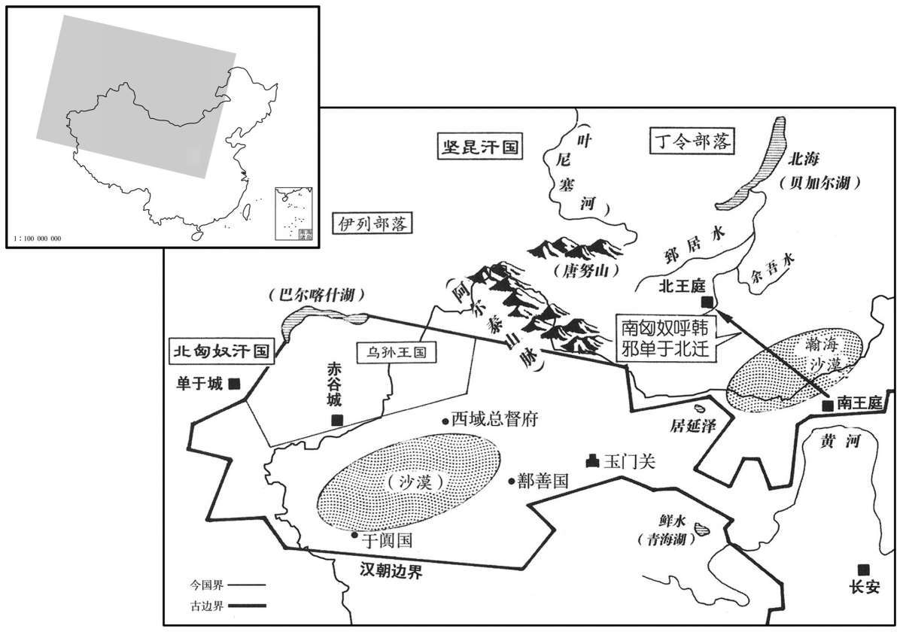

卷次与人物目录 / 卷28
资治通鉴 · 卷第二十八【汉纪二十】
公元前48年至公元前42年 · 原文、白话与胡三省注
本页按胡注本编排保存全卷内容。白话采用本站所据译本，未可靠对应的内容另列说明；事件标题用于定位，并非原书文字。
本卷共66段原文，13段有译文对应，53段缺译或待核对。
卷第二十八【汉纪二十】起昭阳作噩（癸酉），尽屠维单阏（己卯），凡七年。
卷首原文与注释
孝元皇帝上〔荀悦曰：讳「奭」之字曰「盛」。应劭曰：谥法：行义悦民曰元。〕
公元前48年 · 汉孝元皇帝初元元年
初元元年〔（癸酉、前四八）〕
上传本卷混有白话和仅古文部分；已恢复可核对的白话，古文不当作白话。
上传原文的注释括号有异常，字符原样保留；无法可靠划分的段落默认全文显示。
本年事件索引（现代整理）
春，正月，辛丑，葬孝宣皇帝于杜陵；〔臣瓒曰：自崩至葬凡二十八日。杜陵在长安南五十里。〕赦天下。
1春季，正月四日，孝宣皇帝刘洵被安葬在杜陵；大赦天下。
三月，丙午，立皇后王氏，封后父禁为阳平侯。〔恩泽侯表，阳平侯食邑于东郡。〕
2 三月十日，汉元帝刘奭封王政君为皇后，封王政君老父王禁为阳平候。
以三辅、太常、郡国公田及苑可省者振业贫民；〔太常掌诸陵邑，故亦有公田苑。师古曰：振业，振起之令有作业。〕赀不满千钱者，赋贷种、食。〔师古曰：赋，给与之也。贷，假也。种，音之勇翻。贾公彦曰：种食者，或为种子，或为食用。〕
刘奭 下诏：把三辅、太常、各郡各封国公田及 皇家林苑的节余经费跟产物赈济贫民，帮助创业；家产不满一千钱的，供给或借贷种子、食粮。
封外祖平恩戴侯同产弟子中常侍许嘉为平恩侯。〔文颖曰：戴侯，许广汉。谥法，礼不愆曰戴。余按广汉先坐腐刑，及薨，无后；今以嘉绍封。百官表：侍中、中常侍皆加官。西都参用士人，东都始以宦者为中常侍。〕
3刘奭封外祖父平恩戴侯许广汉同胞弟弟的儿子许嘉为平恩侯。
夏，六月，以民疾疫，令太官损膳，减乐府员，省苑马，以振困乏。〔乐府员大凡八百二十九人，武帝所立。汉官仪：牧师诸苑三十六所，分置北边、西边，养马三十万匹。〕
4夏季，六月，传染病流行，刘奭命御厨房减少菜饭，减少音乐部的官员，减少皇家马匹，救济难民。
关〔【章：乙十一行本“关”上有“秋九月”三字；孔本同；传校同。】〕东郡、国十一大水，饥，或人相食；转旁郡钱谷以相救。
5秋季，九月，函谷关以东十一个郡与封国，大水成灾，发生大饥谨，有些地方，人民互相残杀，煮吃对方尸体，汉政府转运其它郡、其它封国的粮食救济。
上素闻琅邪王吉、贡禹皆明经洁行，〔姓谱：贡姓，子贡之后。行，下孟翻。〕遣使者征之。吉道病卒。禹至，拜为谏大夫。上数虚己问以政，〔易咸卦，君子以虚受人。师古曰：虚己，谓听受其言也。数，所角翻。〕禹奏言：“古者人君节俭，什一而税，无他赋役，故家给人足。高祖、孝文、孝景皇帝，宫女不过十余人，厩马百余匹。后世争为奢侈，转转益甚；臣下亦稍放效。〔师古曰：于，音甫往翻；下同。臣愚以为如太古难，宜少放古以自节焉。〔少，诗沼翻。〕方今宫室已定，无可柰何矣；其余尽可减损。故时齐三服官，输物不过十笥；〔李斐曰：齐国旧有三服之官，春献冠帻縰，为首服，纨素为冬服，轻绡为夏服，凡三。如淳曰：地理志曰：齐冠带天下。胡公曰：服官，主作文绣以给衮龙之服。地理志，襄邑亦有服官。师古曰：齐三服官，李说是也。縰，与纚同，音山尔翻，即今之方目也。纨素，今之绢也。轻绡，今之轻也。襄邑自出文绣，非齐三服也。〕方今齐三服官，作工各数千人，一岁费数巨万。〔万万为巨万。〕厩马食粟将万匹。武帝时，又多取好女至数千人，以填后宫。及弃天下，多藏金钱、财物，鸟兽、鱼凡百九十物；又皆以后宫女置于园陵。至孝宣皇帝时，陛下恶有所言，〔师古曰：不能自言减省之事。恶，乌路翻。恶有所言者，恶以天俭其亲。此语承上园陵事。〕群臣亦随故事，甚可痛也！故使天下承化，取女皆大过度：〔师古曰：取，读曰娶。〕诸侯妻妾或至数百人，豪富吏民畜歌者至数十人，〔此所谓取女过度也。〕是以内多怨女，外多旷夫。〔师古曰：旷，空也。室家空也。〕及众庶葬埋，皆虚地上以实地下。其过自上生，〔师古曰：自，从也。上，谓天子也。〕皆在大臣循故事之罪也。唯陛下深察古道，从其俭者：大减损乘舆服御器物，三分去二；〔乘，绳证翻。去，羌吕翻。〕择后宫贤者，留二十人，余悉归之，及诸陵园女无子者，宜悉遣；〔汉制：天子晏驾，后宫送葬，因留奉陵寝。〕马可无过数十匹，独舍长安城南苑地，以为田猎之囿。〔师古曰：舍，置也。独留置之，其余皆废去。舍，读曰舍。〕以方今天下饥馑，可无大自损减以救之，称天意乎！天生圣人，盖为万民，非独使自娱乐而已也。”〔称，尺证翻。为，于伪翻。乐，音洛。〕天子纳善其言，下诏，今诸宫馆希御幸者勿缮治；〔治，直之翻。〕太仆减谷食马；水衡减肉食兽。〔太仆，掌舆马。汉旧仪云：天子六，未央、丞华、辂軨、骑马、騊駼、大也；马皆万匹。水衡都尉，掌上林苑，禽兽属焉。师古曰：缮，补也。减，谓损其数。省者，全去之。〕
刘奭早就听说琅邪王吉、贡禹全都精通儒家五经，德行廉洁，特派使节把二人征召到长安。王吉在途中病逝。贡禹到了之后，被任命当谏议大夫。刘奭屡次谦恭地向他请教如何治理国家。贡禹说：“古时候，君王都很节约，因而用度也很有限，除了征收十分之一的赋税外，没有其它赋税遥役，所以家家户户都保持自给自足的生活。高祖、孝文、孝景皇帝，宫女不过十多人，御马不过百余匹。但是后世迫不及待地追求享受，恶性发展，就越来越严重了。上行下效，臣属也跟着奢侈。我愚昧地认为完全仿效太古，当然困难，但至少也应效法近代祖先的事迹。现在，宫殿的兴建，告一段落，已经无可奈何了，而其它的开支，应尽量减少。
史家评论 · 原文及其白话
臣光曰：忠臣之事君也，责其所难，则其易者不劳而正；〔易，以豉翻。〕补其所短，则其长者不劝而遂。孝元践位之初，虚心以问禹，禹宜先其所急，后其所缓。然则优游不断，〔先、后，皆去声。断，丁乱翻。〕谗佞用权，当时之大患也，而禹不以为言；恭谨节俭，孝元之素志也，而禹孜孜言之；何哉！使禹之智不足不知，乌得为贤！知而不言，为罪愈大矣。
本段缺少可靠对应白话，原文完整保留；未使用生成译文。
匈奴呼韩邪单于复上书，言民众困乏。〔复，扶又翻。〕诏云中、五原邵转谷二万斛以给之。
本段缺少可靠对应白话，原文完整保留；未使用生成译文。
是岁，初置戊己校尉，使屯田车师故地。〔师古曰：戊己校尉者，镇安西域，无常治处，亦犹甲乙等各有方位，而戊与己四季寄王，故以名官也。时有戊校尉，又有己校尉。一说：戊与己位在中央，今所置校尉在三十六国之中，故曰戊己也。余谓车师之地不在三十六国之中，当从师古前说为是。宣帝元康二年，以车师地与匈奴。今匈奴款附，故复屯田故地。〕
本段缺少可靠对应白话，原文完整保留；未使用生成译文。
译本所载内容待核对（不作白话）
1春，正月，辛丑，葬孝宣皇帝于杜陵；赦天下。
1春季，正月四日，孝宣皇帝刘洵被安葬在杜陵；大赦天下。
2三月，丙午，立皇后王氏，封后父禁为阳平候。
2 三月十日，汉元帝刘奭封王政君为皇后，封王政君老父王禁为阳平候。
以三辅、太常、郡国公田及苑可省者振业贫民；赀不满千钱者，赋贷种、食。
刘奭 下诏：把三辅、太常、各郡各封国公田及 皇家林苑的节余经费跟产物赈济贫民，帮助创业；家产不满一千钱的，供给或借贷种子、食粮。
3封外祖父平恩戴侯同产弟子中常侍许嘉为平恩侯。
3刘奭封外祖父平恩戴侯许广汉同胞弟弟的儿子许嘉为平恩侯。
4夏，六月，以民疾疫，令太官损膳，减乐府员，省苑马，以振困乏。
4夏季，六月，传染病流行，刘奭命御厨房减少菜饭，减少音乐部的官员，减少皇家马匹，救济难民。
5秋，九月，关东郡、国十一大水，饥，或人相食；转旁郡钱谷以相救。
5秋季，九月，函谷关以东十一个郡与封国，大水成灾，发生大饥谨，有些地方，人民互相残杀，煮吃对方尸体，汉政府转运其它郡、其它封国的粮食救济。
6上素闻琅邪王吉、贡禹皆明经洁行，遣使者征之。吉道病卒。禹至，拜为谏大夫。上数虚已问以政事，禹奏言：“古者人君节俭，什一而税，亡它赋役，故家给人足。高祖、孝文、孝景皇帝，宫女不过十馀人，厩马百馀匹。后世争为奢侈，转转益甚；臣下亦相放效。臣愚以为如太古难，宜少放古以自节焉。方今宫室已定，无可奈何矣；其馀尽可减损。故时齐三服官，输物不过十笥；方今齐三服官，作工各数千人，一岁费数巨万，厩马食粟将万匹。武帝时，又多取好女至数千人，以填后宫。及弃天下，多藏金钱、财物，鸟兽、鱼鳖凡百九十物；又皆以后宫女置于园陵。至孝宣皇帝时，陛下恶有所言，群臣亦随故事，甚可痛也！故使天下承化，取女皆大过度，诸侯妻妾或至数百人，豪富吏民畜歌者至数十人，是以内多怨女，外多旷夫。及众庶葬埋，皆虚地上以实地下。其过自上生，皆在大臣循故事之罪也。唯陛下深察古道，从其俭者。大减损乘舆服御器物，三分去二；择后宫贤者，留二十人，馀悉归之，及诸陵园女无子者，宜悉遣；厩马可无过数十匹，独舍长安城南苑地，以为田猎之囿。方今天下饥馑，可无大自损减以救之称天意乎！天生圣人，盖为万民，非独使自娱乐而已也。”天子纳善其言，下诏，令诸宫馆希御幸者勿缮治；太仆减谷食马；水衡省肉食兽。
刘奭早就听说琅邪王吉、贡禹全都精通儒家五经，德行廉洁，特派使节把二人征召到长安。王吉在途中病逝。贡禹到了之后，被任命当谏议大夫。刘奭屡次谦恭地向他请教如何治理国家。贡禹说：“古时候，君王都很节约，因而用度也很有限，除了征收十分之一的赋税外，没有其它赋税遥役，所以家家户户都保持自给自足的生活。高祖、孝文、孝景皇帝，宫女不过十多人，御马不过百余匹。但是后世迫不及待地追求享受，恶性发展，就越来越严重了。上行下效，臣属也跟着奢侈。我愚昧地认为完全仿效太古，当然困难，但至少也应效法近代祖先的事迹。现在，宫殿的兴建，告一段落，已经无可奈何了，而其它的开支，应尽量减少。
臣光曰：忠臣之事君也，责其所难，则其易者不劳而正；补其所短，则其长者不劝而遂。孝元践位之初，虚心以问禹，禹宜先其所急，后其所缓。然则优游不断，谗佞用权，当时之大患也，而禹不以为言；恭谨节俭，孝元之素志也，而禹孜孜而言之，何哉！使禹之智足不以知，乌得为贤！知而不言，为罪愈大矣！
匈奴呼韩邪单于复上书，言民众困乏。诏云中、五原郡转谷二万斛以给之。 是岁，初置戊己校尉，使屯田车师故地。
公元前47年 · 汉孝元皇帝初二年
二年〔（甲戌、前四七）〕
上传本卷混有白话和仅古文部分；已恢复可核对的白话，古文不当作白话。
上传原文的注释括号有异常，字符原样保留；无法可靠划分的段落默认全文显示。
本年事件索引（现代整理）
- 萧望之、周堪受元帝信任，与外戚史高渐生嫌隙
- 宦官弘恭、石显掌握中枢，石显凭势排斥异己
- 萧望之建议罢中书宦官，因而得罪史高、弘恭、石显
- 郑朋先依附萧望之，后转投外戚并反诬望之
- 弘恭、石显构陷萧望之等，元帝误令下狱后赦免并免官
- 元帝封弟刘竟为清河王
- 陇西地震，城郭屋宇倒塌并压死多人
- 元帝立广陵王刘霸为王
- 元帝裁撤宫苑犬马与禁苑，赐贫民耕种并举荐贤才
- 元帝立刘骜为太子，征张敞为左冯翊未及而张敞去世
- 元帝赐萧望之关内侯，令其定期入朝
- 关东饥荒严重，齐地出现人相食
- 再次发生地震
- 元帝重新征召周堪、刘更生，却只任为中郎
- 刘更生借地震上书弹劾石显等，反遭下狱免官
- 萧望之再受构陷，被迫饮鸩自尽，元帝痛悔失去贤傅
- 司马光责元帝易受蒙蔽，知望之被害仍不能惩治石显
- 弘恭病死，石显独掌中书
- 贾捐之以民困与海外用兵代价劝元帝放弃珠厓，朝廷议而未决
春，正月，上行幸甘泉，郊泰畤。〔畤，音止。〕乐陵侯史高以外属领尚书事，前将军萧望之、光禄大夫周堪为之副。望之名儒，与堪皆以师傅旧恩，天子任之，数宴见，言治乱，陈王事。〔事，所角翻。见贤遍翻。治，直吏翻。陈王者之事。〕望之选白宗室明经有行〔行，下孟翻。〕散骑、谏大夫刘更生给事中，〔明经有行，言其通于经术，且行修饬也。百官表曰：散骑加官；骑并乘舆车。师古曰：并，音步浪翻。骑而散从，无常职也。给事中，给事禁中也。散，悉亶翻。〕与侍中金敞并拾遣左右。四人同心谋议，劝导上古制，多所欲匡正；下甚乡纳之。〔师古曰：乡，读曰向。意信向之而纳用其言。〕史高充位而已，由此与望之有隙。
本段缺少可靠对应白话，原文完整保留；未使用生成译文。
中书令弘恭、〔弘，姓也。卫有大夫弘演。〕仆射石显，自宣帝时久典枢机，明习文法；〔续汉志：尚书令，承秦所置；武帝用宦者，更为中书谒者令。成帝用士人，复故。令掌凡选署及奏下尚书曹文书众事。仆射，署尚书事，令不在则奏下众事。辩已见前。〕帝即位多疾，以显久典事，中人无外党，〔师古曰：少骨肉之亲，无婚姻之家也。〕精专可信任，遂委以政，事无大小，因显白决，〔白，奏也。决，断也。〕贵幸倾朝，〔朝，直遥翻。〕百僚皆敬事显。显为人巧慧习事，能深得人主微指，内深贼，持诡辩，以中伤人，〔师古曰：诡，违也。违道之辩。中，竹仲翻。〕忤恨睚眦，辄被以危法；〔忤，五故翻。睚，五懈翻。眦，仕懈翻。师古曰：被，加也，音皮义翻。危法，谓以法危杀之。〕亦与车骑将军高为表里，议论常独持故事，不从望之等。
本段缺少可靠对应白话，原文完整保留；未使用生成译文。
望之等患苦许、史纵，又疾恭、显擅权，建白以为：「中书政本，国家枢机，〔师古曰：建白者，立此议而白之。〕宜以通明公正处之。〔处，昌吕翻。〕武帝游宴后庭，故用宦者，非古制也。宜罢中书宦官，应古不近刑人之义。」〔师古曰：礼，刑人不在君侧，故曰应古。近，其靳翻。〕由是大与高、恭、显忤。〔师古曰：忤，谓相违逆也。忤，五故翻。〕上初即位，谦让，重改作，〔师古曰：重，难也；未欲更置士人于中书也。〕议久不定，出刘更生为宗正。〔散骑、给事中，中朝官也；宗正，外朝官也，故云出。〕
本段缺少可靠对应白话，原文完整保留；未使用生成译文。
望之、堪数荐名儒、茂材以备谏官，〔数，所角翻。〕会稽郑朋阴欲附望之，〔会，工外翻。〕上书言车骑将军高遣客为奸利郡国，及言许、史子弟罪过。章视周堪，〔师古曰：视，读曰示。以朋所奏之章示堪也。〕堪白：「令朋待诏金马门。」朋奏记望之曰：「今将军规抚，云若管、晏而休，遂行日昃，至周、召乃留乎﹖〔师古曰：问望之，立意当趣如管、晏而止，为欲恢廓其道，日昃不食，追周、召之迹然后已乎﹖抚，读曰模，其字从木。若管、晏而休，则下走将归延陵之皋，没齿而已矣。〔应劭曰：下走，仆也。张晏曰：吴公子札食邑延陵，薄吴王之行，弃国而耕于皋泽。朋云望之所为但如管、晏，则不处汉朝，将归会稽，寻延陵之轨，隐耕皋泽之中也。师古曰：下走，自谦，言趋走之使也。没齿，终身也。〕如将军兴周、召之遗业，亲日昃之兼听，则下走其庶几愿竭区区奉万分之一！」〔召，读曰邵。庶几，居希翻。〕望之始见朋，接待以意；〔师古曰：与之相见，纳用其说也。余谓接待以意者，推诚待之，接以殷勤。〕后知其倾邪，绝不与通。朋，楚士，怨恨，〔张晏曰：朋，会稽人，会稽并属楚。苏林曰：楚人脆急也。〕更求入许、史，推所言许、史事，〔推，吐雷翻。〕曰：「皆周堪、刘更生教我；我关东人，何以知此！」于是侍中许章白见朋。〔见，贤遍翻；下同。〕朋出，扬言曰：「我见言前将军小过五，大罪一。」〔前将军，谓望之也。〕待诏华龙行污秽，〔师古曰：华，音胡化翻。姓也。行，下孟翻。〕欲入堪等，堪等不纳，亦与朋相结。
本段缺少可靠对应白话，原文完整保留；未使用生成译文。
恭、显令二人告望之等谋欲罢车骑将军，疏退许、史状，〔车骑将军，谓史高。疏，与同。〕侯望之出休日，汉制：自三署郎以上入直禁中者，十日一出休沐。〕令朋、龙上之。事下弘恭问状，〔上，时掌翻。下，遐稼翻；下既下同。〕望之对曰：「外戚在位多奢淫，欲以匡正国家，非为邪也。」恭、显奏：「望之、堪、更生朋党相称举，数谮诉大臣，〔数，所角翻。〕毁离亲戚，欲以专擅权势。为臣不忠，诬上不道，请谒者召致廷尉。」时上初即位，不省召致廷尉为下狱也，〔省，悉井翻，察也，悟也。〕可其奏。后上召堪、更生，曰：「系狱。」上大惊曰：「非但廷尉问邪！」以责恭﹑显，皆叩头谢。上曰：「令出视事。」恭、显因使史高言：「上新即位，未以德化闻天下，而先验师傅。既下九卿、大夫狱，〔刘更生为宗正，九卿也。周堪为光禄大夫。闻，音问。下，遐嫁翻。〕宜因决免。」于是制诏丞相、御史：「前将军望之，傅朕八年，〔宣帝五凤二年，萧望之为太子太傅；至黄龙元年为八年。〕无他罪过，今事久远，识忘难明，〔师古曰：言不能尽记，有遗忘者，故难明。忘，巫于翻。〕其赦望之罪，收前将军、光禄勋印绶；及堪、更生皆免为庶人。」
本段缺少可靠对应白话，原文完整保留；未使用生成译文。
二月，丁巳，立弟竟为清河王。〔考异曰：荀纪，“竟”作“宽”，今从汉书。〕
本段缺少可靠对应白话，原文完整保留；未使用生成译文。
戊午，陇西地震，败城郭、屋室，压杀人众。〔败，补迈翻。考异曰：刘向传云：“三月，地大震。”今从元纪。〕
本段缺少可靠对应白话，原文完整保留；未使用生成译文。
三月，立广陵厉王子霸为王。〔宣帝五凤四年，广陵厉王胥以罪自杀，国除。今复立其子。〕
本段缺少可靠对应白话，原文完整保留；未使用生成译文。
诏罢黄门乘舆狗马，〔师古曰：黄门，近署也，故亲幸之物属焉。百官表：黄门寺，属少府。乘，绳证翻。〕水衡禁囿、〔百官表：水衡都尉属官有禁圃等九官令、丞。〕宜春下苑、〔孟康曰：宜春，宫名也，在杜县东。晋灼曰：史记云：葬二世杜南宜春苑中。师古曰：宜春下苑，即今京城东南隅曲江池是。〕少府佽飞外池、〔百官表：少府属官有左弋十二官令、丞。武帝太初元年，更名左弋为佽飞。佽飞，掌弋射，有九丞、两尉。如淳曰：佽飞，具矰缴以凫鴈，给祭祀，是故池也。佽飞，荆人，入水斩蛟，勇士也，故以名官。饮，音次。〕严栅池田〔苏林曰：严饰池上之屋及其地也。晋灼曰：严栅，射苑也。许慎曰：严，弋射所蔽也。池田，苑中田也。师古曰：晋说是也。〕假与贫民。又诏赦天下，举茂材异等、直言极谏之士。
本段缺少可靠对应白话，原文完整保留；未使用生成译文。
夏，四月，〔【章：乙十一行本「月」下有「丁巳」二字；孔本同；张校同；传校同。】〕立子骜为皇太子。〔骜，五到翻。〕待诏郑朋荐太原太守张敞，先帝名臣，宜傅辅皇太子。上以问萧望之，望之以为敞能吏，任治烦乱，材轻，非师傅之器。〔敞传云：敞无威仪，罢朝会过，走马章台街，使御吏驱，自以便面拊马；又为妇画眉。所谓材轻也。任，音壬。治，直之翻。〕天子使使者征敞，欲以为左冯翊，会病卒。
本段缺少可靠对应白话，原文完整保留；未使用生成译文。
诏赐萧望之爵关内侯，给事中，朝朔望。〔朝，直遥翻。考异曰：元纪，此诏在今冬。按刘向传云：「前弘恭奏望之等狱决；三月，地大震。」然则望之等黜免，在今春地震前也。又曰：「夏，客星见昴、卷舌间。上感悟，下诏赐望之爵关内侯。」望之传曰：「后数月，赐望之爵关内侯。」盖纪见望之死在十二月，因置此诏于上耳。〕
本段缺少可靠对应白话，原文完整保留；未使用生成译文。
关东饥，齐地人相食。
本段缺少可靠对应白话，原文完整保留；未使用生成译文。
秋，七月，己酉，地复震。〔复，扶又翻；下同。考异曰：刘向传曰：「冬，地复震。」元纪，此月诏曰：「一年中地再动。」汉纪在七月己酉。今从之。〕
本段缺少可靠对应白话，原文完整保留；未使用生成译文。
上复征周堪、刘更生，欲以为谏大夫；弘恭、石显白，皆以为中郎。〔百官表：谏大夫，秩比八百石；中郎，秩比六百石：并属光禄动。〕
本段缺少可靠对应白话，原文完整保留；未使用生成译文。
上器重萧望之不已，欲倚以为相；〔相，息亮翻。〕恭、显及许、史兄弟、侍中、诸曹皆侧目于望之等。更生乃使其外亲上变事，〔外亲，谓母党也。上，时掌翻；下同。〕地震殆为恭等，不为三独夫动。〔应劭曰：三独夫，谓萧望之、周堪及向。师古曰：独夫，犹言匹夫也。殆，近也。为于伪翻。〕臣愚以为宜退恭、显以章蔽善之罚，〔师古曰：章，明也。〕进望之等以通贤者之路，如此，则太平之门开，灾异之原塞矣。」〔塞，悉则翻；下同。〕书奏，恭、显疑其更生所为，白请考奸诈，辞果服；遂逮更生系狱，免为庶人。
本段缺少可靠对应白话，原文完整保留；未使用生成译文。
会望之子散骑、中郎伋亦上书讼望之前事，〔散骑、中郎者，本为中郎而加散骑官也。〕事下有司，复奏：「望之前所坐明白，无谮诉者，〔师古曰：言望之自有罪，非人谗谮而诉之也。下遐稼翻。复，扶又翻；下同。〕而教子上书，称引亡辜之诗，〔史不载伋书，不知其所称引者何诗。诗变雅云：无罪无辜，谗口嗷嗷。岂伋所引者即此诗乎！亡，古无字通。〕失大臣体，不敬；请逮捕。」弘恭、石显等知望之素高节，不诎辱，〔诎，与屈同。〕建白：「望之前幸得不坐，复赐爵邑，不悔过服罪，深怀怨望，教子上书，归非于上，〔师古曰：言归恶于天子也。〕自以托师傅，终必不坐，〔师古曰：言恃旧恩，自谓终无罪坐，怀此心。〕非颇屈望之于牢狱，塞其怏怏心，则圣朝无以施恩厚！」上曰：「萧太傅素刚，安肯就吏！」显等曰：人命至重，〔言人所重者性命也。〕望之所坐，语言薄罪，〔既以语言为薄罪，则不当下吏。孝元于此，不能破恭、显之奸，可谓不明矣。〕必无所忧。」上乃可其奏。冬，十二月，显等封诏以付谒者，敕令召望之手付。因令太常急发执金吾车骑驰围其第。〔太常，掌诸陵县。执金吾，掌徼循京师。萧望之时居杜陵，故令太常发执金吾车骑往围其第以恐胁之，速其自尽也。〕使者至，召望之。望之以问门下生鲁国朱云，云者，好节士，〔好，呼到翻。〕劝望之自裁。〔自裁，犹自杀也。〕于是望之仰天叹曰：「吾尝备位将相，年踰六十矣，老入牢狱，苟求生活，不亦鄙乎！」字谓云曰：「游，〔师古曰：朱云，字游，呼其字。〕趣和药来，〔趣，读曰促。和，户卧翻。〕无久留我死！」遂〔【章：乙十一行本「遂」作「竟」；传校同。】〕饮鸩自杀。〔果堕恭、显计中。〕天子闻之惊，拊手曰：「曩固疑其不就牢狱，果然杀吾贤傅！」是时，太官方上昼食，上，时掌翻。〕上乃却食，为之涕泣，哀动左右。〔诗云：啜其泣矣，何嗟及矣。为，于伪翻。〕于是召显等责问；以议不详，〔师古曰：详，审也。皆免冠谢，良久然后已。上追念望之不忘，每岁时遣使者祠祭望之，终帝之世。〔平曰墓；封曰墓；封曰冢；高曰坟。〕
本段缺少可靠对应白话，原文完整保留；未使用生成译文。
史家评论 · 原文及其白话
臣光曰：甚矣孝元之为君，易欺而难悟也！〔易，以豉翻。〕夫恭、显之谮诉望之，其邪说诡计，诚有所不能辨也。至于始疑望之不肯就狱，恭、显以为必无忧，已而果自杀，则恭、显之欺亦明矣。在中智之君，孰不感动奋以底邪臣之罚！〔底，致也。〕孝元则不然。虽涕泣不食以伤望之，而终不能诛恭、显，纔得其免冠谢而已。如此，则奸臣安所惩乎!
本段缺少可靠对应白话，原文完整保留；未使用生成译文。
是岁，弘恭病死，石显为中书令。
本段缺少可靠对应白话，原文完整保留；未使用生成译文。
初，武帝灭南越，闰置珠箧、儋耳郡，〔事见二十卷武帝元鼎六年。儋，丁甘翻。〕在海中洲上；〔师古曰：居海中之洲也。水中可居者曰洲。〕吏卒皆中国人，多侵陵之。其民亦暴恶，自以阻绝，数犯吏禁，〔数，所角翻。〕率数年壹反，杀吏；汉辄发兵击定之。二十余年间，凡六反。〔据贾捐之传：自初为郡，至昭帝始元元，二十余年间，凡六反。〕至宣帝时，又再反。〔始元五年，罢儋耳郡并属珠箧。至宣帝神爵三年，珠箧三县反。后七年，甘露元年，九县复反。〕上即位之明年，珠箧山南县反，发兵击之。诸�之颿q，连年不定。〔海中洲上，以黎母山为主，环山列置诸县。山南县盖置于黎母之南也。师古曰：更，音工衡翻。〕上博谋于群臣，欲大发军。待诏贾捐之曰：〔捐之时待诏金马门。〕「臣闻尧、舜、禹之圣德，地方不过数千里，西被流沙，东渐于海，朔南暨声教，〔师古曰：此引禹贡之辞。渐，入也；一曰浸也。朔，北方也。暨，及也。被，皮义翻。渐，子廉翻。〕言欲与声教则治之，不欲与者不强治也。〔与，读曰豫。治，直之翻。强，其两翻。〕故君臣歌德，〔师古曰：言皆有德可歌颂。〕含气之物各得其宜。武丁、成王，殷、周之大仁也，然地东不过江、黄，〔杜预曰：江国，在汝南安阳县。黄国，今弋阳县。〕西不过氐、羌，南不过蛮荆，北不过朔方，是以颂声并作，视听之物〔【章：乙十一行本「物」作「类」；孔本同；张校同。】〕咸乐其生，〔乐，音洛。〕越裳氏重九译而献，此非兵革之所能致也。〔晋灼曰：远国使来，因九译言语乃通也。张晏曰：越不着衣裳，慕中国化，遣译来着衣裳，故曰越裳也。师古曰：越裳自是国名，非以袭衣裳始为称号也。王充论衡作「越尝」，此则不作衣裳之字明矣。晋志曰：吴孙皓置九德郡，即周时越裳氏地。〕以至于秦，兴兵远攻，贪外虚内而天下溃畔。孝文皇帝偃武行文，当此之时，断狱数百，赋役轻简。〔断，丁乱翻。下同。〕孝武皇帝厉兵马以攘四夷，天下断狱万数，赋烦役重，寇贼并起，军旅数发，〔数，所角翻。〕父战死于前，子伤于后，女子乘亭障，孤儿号于道，老母、寡妇饮泣巷哭，〔师古曰：泪流被面以入于口，故言饮泣也。巷哭者，哭于路也。号，户刀翻。〕是皆廓地泰大，征伐不休之故也。今关东民众久困，流离道路。人情莫亲父母，莫乐夫妇；〔乐，音洛。〕至嫁妻、卖子，法不能禁，义不能止，此社稷之忧也。今陛下不忍悁悁之忿，〔悁，萦年翻，又吉掾翻，忿也，忧也；诗：中心悁悁。又急躁貌。〕欲驱士众挤之大海之中，师古曰：挤，坠也，音子诣翻，又子奚翻；余谓挤，排也，推也。〕快心幽冥之地，非所以救助饥馑，保全元元也。诗云：『蠢尔蛮荆，大邦为雠。』〔师古曰：诗小雅采芑之诗也。蠢，动貌也。蛮荆，荆州之蛮也。言敢与大国为雠敌也。〕言圣人起则后服，中国衰则先畔，自古而患之，何况乃复其南方万里之蛮乎！〔言珠箧又在蛮荆之南，去京师万里。复，扶又翻。〕骆越之人，〔南越王尉佗以兵威役属西瓯骆。师古曰：西瓯，即骆越也。言西者，以别东瓯也。余谓今安南之地，古之骆越也。珠箧，盖亦骆越地。宋白曰：高、贵二州，亦古骆越地。〕父子同川而浴，相习以鼻饮，〔范成大曰：今邕管溪洞及海喜鼻饮。随贫富，以银、锡、陶器或大瓢盛水，入盐，并山姜汁数滴；器侧有窍，施管如瓶觜，内鼻中，吸水升脑，下入喉。吸水时，含鱼肉鲊一脔，故水得安流入鼻，不与气相激。既饮，必噫气，谓掠脑快膈莫此若。但可饮水；或传为饮酒，非是。〕与禽兽无异，本不足郡县置也。颛颛独居一海之中，〔师古曰：颛，与专同。专专，犹区区也；一曰：圜貌也。〕雾露气湿，多毒草、虫蛇、水土之害；人未见虏，战士自死。又非独珠箧有珠、犀、樯瑁也。〔海中有珠池。珠母者，蚌也。采珠必蜑丁，皆居海艇中，以大舶环池采珠；以石悬大焴，别以小绳系蜑〔丁〕腰，没水取珠。气迫则撼绳，绳动，舶人觉，乃绞取，人缘人焴上。然而死于采珠者亦多矣，此我太祖皇帝所以罢刘氏媚川都也。师古曰：犀状如牛，头如猪，而四足类象；黑色；一角当额前，鼻上又有小角。刘欣明交州记曰：犀，其毛如豕，蹄有三甲，头如马；有三角，鼻上角短，额上、头上角长。异物志曰：角中特有光耀，白理如线，自本达末，则为通天犀。抱朴子曰：通天犀有白理如线者，以盛米，鸡即骇矣。其真者，刻为鱼，衔入水，水开三尺。本草图经曰：犀，出永昌山谷及益州，今出南海者为上。郭璞尔雅注曰：犀三角，一在顶上，一在额上，一在鼻上。鼻上者，即食角，小而不椭。樯瑁，如龟，其甲相覆而生，若甲然；甲上有斑文。樯，音代。瑁，音妹。〕弃之不足惜，不击不损威。其民譬犹鱼鳖，何足贪也！臣窃以往者羌军言之，〔此盖指宣帝神爵元年羌反时。〕暴师曾未一年，兵出不踰千里，费四十余万万；大司农钱尽，乃以少府禁钱续之。〔续汉志：大司农掌诸钱、谷、金、帛、诸货币。边郡诸官请调度者，皆为报给，损多益寡，取相给足。百官表：少府，掌山林池泽之税，以给共养。应劭注曰：名曰禁钱，以给私养，自别为藏。少者，小也。故称少府。师古曰：大司农，供军国之用；少府，以养天子也。〕夫一隅为不善，费尚如此，况于劳师远攻，亡士毋功乎！〔毋，与无同。〕求之往古则不合，施之当今又不便，臣愚以为非冠带之国，禹页所及，春秋所治，皆可且无以为。〔师古曰：为，犹用也。治，直之翻。〕愿遂弃珠箧，专用恤关东为忧！」上以问丞相、御史。御史大夫陈万年以为当击；丞相于定国以为：「前日兴兵击之连年，护军都尉、校尉及丞凡十一人，还者二人，卒士及转输死者万人以上，费用三万万余，尚未能尽降。〔降，户江翻。〕今关东困乏，民难摇动，捐之议是。」上从之。捐之，贾谊曾孙也。
本段缺少可靠对应白话，原文完整保留；未使用生成译文。
译本所载内容待核对（不作白话）
春，正月，上行幸甘泉，郊泰畤。乐陵侯史高以外属领尚书事，前将军萧望之、光禄大夫周堪为之副。望之名儒，与堪皆以师傅旧恩，天子任之，数宴见，言治乱，陈王事。望之选白宗室明经有行散骑、谏大夫刘更生给事中，与侍中金敞并拾遗左右。四人同心谋议，劝导上以古制，多所欲匡正；上甚乡纳之。史高充位而已，由此与望之有隙。
中书令弘恭、仆射石显，自宣帝时久典枢机，明习文法；帝即位多疾，以显久典事，中人无外党，精专可信任，遂委以政，事无小大，因显白决，贵幸倾朝，百僚皆敬事显。显为人巧慧习事，能深得人主微指，内深贼，持诡辩，以中伤人，忤恨睚眦，辄被以危法；亦与车骑将军高为表里，议论常独持故事，不从望之等。
望之等患苦许、史放纵，又疾恭、显擅权，建白以为：“中书政本，国家枢机，宜以通明公正处之。武帝游宴后庭，故用宦者，非古制也。宜罢中书宦官，应古不近刑人之义。”由是大与高、恭、显忤。上初即位，谦让，重改作，议久不定，出刘更生为宗正。
望之、堪数荐名儒、茂材以备谏官，会稽郑朋阴欲附望之，上书言车骑将军高遣客为奸利郡国，及言许、史弟子罪过。章视周堪，堪白：“令朋待诏金马门。”朋奏记望之曰：“今将军规抚，云若管、晏而休，遂行日昃，至周、召乃留乎？若管、晏而休，则下走将归延陵之皋，没齿而已矣。如将军兴周、召之遗业，亲日昊之兼听，则下走其庶几愿竭区区奉万分之一！”望之始见朋，接待以意；后知其倾邪，绝不与通。朋，楚士，怨恨，更求入许、史，推所言许、史事，曰：“皆周堪、刘更生教我；我关东人，何以知此！”于是侍中许章白见朋。朋出，扬言曰：“我见言前将军小过五，大罪一。”待诏华龙行污秽，欲入堪等，堪等不纳，亦与朋相结。
恭、显令二人告望之等谋欲罢车骑将军，疏退许、史状，候望之出休日，令朋、龙上之。事下弘恭问状，望之对曰：“外戚在位多奢淫，欲以匡正国家，非为邪也。”恭、显奏：“望之、堪、更生朋党相称举，数谮诉大臣，毁离亲戚，欲以专擅权势。为臣不忠，诬上不道，请谒者召致廷尉。”时上初即位，不省召致廷尉为下狱也，可其奏。后上召堪、更生，曰：“系狱。”上大惊曰：“非但廷尉问邪！”以责恭、显，皆叩头谢。上曰：“令出视事。”恭、显因使史高言：“上新即位，未以德化闻于天下，而先验师傅。即下九卿、大夫狱，宜因决免。”于是制诏丞相、御史：“前将军望之，傅朕八年，无它罪过。今事久远，识忘难明，其赦望之罪，收前将军、光禄勋印绶；及堪、更生皆免为庶人。”
二月，丁巳，立弟竟为清河王。
戊午，陇西地震，败城郭、屋室，压杀人众。
三月，立广陵厉王子霸为王。
诏罢黄门乘舆狗马，水衡禁囿、宜春下苑、少府佽飞外池、严籞池田假与贫民。又诏赦天下，举茂材异等、直言极谏之士。
夏，四月，丁巳，立子骜为皇太子。待诏郑朋荐太原太守张敞，先帝名臣，宜傅辅皇太子。上以问萧望之，望之以为敞能吏，任治烦乱，材轻，非师傅之器。天子使使者征敞，欲以为左冯翊，会病卒。
诏赐萧望之爵关内侯，给事中，朝朔望。
关东饥，齐地人相食。
秋，七月，己酉，地复震。
上复征周堪、刘更生，欲以为谏大夫；弘恭、石显白，皆以为中郎。
上器重萧望之不已，欲倚以为相；恭、显及许、史子弟、侍中、诸曹皆侧目于望之等。更生乃使其外亲上变事，言“地震殆为恭等，不为三独夫动。臣愚以为宜退恭、显以章蔽善之罚，进望之等以通贤者之路。如此，则太平之门开，灾异之愿塞矣。”书奏，恭、显疑其更生所为，白请考奸诈，辞果服；遂逮更生系狱，免为庶人。
会望之子散骑、中郎亻及亦上书讼望之前事，事下有司，复奏：“望之前所坐明白，无谮诉者，而教子上书，称引亡辜之诗，失大臣体，不敬，请逮捕。”弘恭、石显等知望之素高节，不诎辱，建白：“望之前幸得不坐，复赐爵邑，不悔过服罪，深怀怨望，教子上书，归非于上，自以托师傅，终必不坐，非颇屈望之于牢狱，塞其怏怏心，则圣朝无以施恩厚。”上曰：“萧太傅素刚，安肯就吏！”显等曰：“人命至重，望之所坐，语言薄罪，必无所忧。”上乃可其奏。冬，十二月，显等封诏以付谒者，敕令召望之手付。因令太常急发执金吾车骑驰围其第。使都至，召望之。望之以问门下生鲁国硃云，云者，好节士，劝望之自裁。于是望之仰天叹曰：“吾尝备位将相，年逾六十矣，老入牢狱，苟求生活，不亦鄙乎！”字谓云曰：“游，趣和药来，无久留我死！”竟饮鸠自杀。天子闻之惊，拊手曰：“曩固疑其不就牢狱，果然杀吾贤傅！”是时，太官方上昼食，上乃却食，为之涕泣，哀动左右。于是召显等责问以议不详，皆免冠谢，良久然后已。上追念望之不忘，每岁时遣使者祠祭望之冢，终帝之世。
臣光曰：甚矣孝元之为君，易欺而难寤也！夫恭、显之谮诉望之，其邪说诡计，诚有所不能辨也。至于始疑望之不肯就狱，恭、显以为必无忧。已而果自杀，则恭、显之欺亦明矣。在中智之君，孰不感动奋发以厎邪臣之罚！孝元则不然。虽涕泣不食以伤望之，而终不能诛恭、显，才得其免冠谢而已。如此，则奸臣安所惩乎！是使恭、显得肆其邪心而无复忌惮者也。
是岁，弘恭病死，石显为中书令。 初，武帝灰南越，开置珠厓、儋耳郡，在海中洲上，吏卒皆中国人，多侵陵之。其民亦暴恶，自以阻绝，数犯吏禁，率数年壹反，杀吏；汉辄发兵击定之。二十馀年间，凡六反。至宣帝时，又再反。上即位之明年，珠厓山南县反，发兵击之。诸县更叛，连年不定。上博谋于群臣，欲大发军。待诏贾捐之曰：“臣闻尧、舜、禹之圣德，地方不过数千里，西被流沙，东渐于海，朔南暨声教，言欲与声教则治之，不欲与者不强治也。故君臣歌德，含气之物各得其宜。武丁、成王、殷、周之大仁也，然地东不过江、黄，西不过氐、羌，南不过蛮荆，北不过朔方，是以颂声并作，视听之类咸乐其生，越裳氏重九译而献，此非兵革之所能致也。以至于秦，兴兵远攻，贪外虚内而天下溃畔。孝文皇帝偃武行文，当此之时，断狱数百，赋役轻简。孝武皇帝厉兵马以攘四夷，天下断狱万数，赋烦役重，寇贼并起，军旅数发，父战死于前，子斗伤于后，女子乘亭障，孤儿号于道，老母、寡妇饮泣巷哭，是皆廓地泰大，征伐不休之故也。今关东民众久困，流离道路。人情莫亲父母，莫乐夫妇；至嫁妻卖子，法不能禁，义不能止，此社稷之忧也。今陛下不忍悁悁之忿，欲驱士众挤之大海之中，快心幽冥之地，非所以救助饥馑，保全元元也。诗云：‘蠢尔蛮荆，大邦为雠。’言圣人起则后服，中国衰则先畔，自古而患之，何况乃复其南方万里之蛮乎！骆越之人，父子同川而浴，相习以鼻饮，与禽兽无异，本不足郡县置也。颛颛独居一海之中，雾露气湿，多毒草、虫蛇、水土之害；人未见虏，战士自死。又非独珠厓有珠、犀、玳瑁也。弃之不足惜，不击不损威。其民譬犹鱼鳖，何足贪也！臣窃以往者羌军言之，暴师曾未一年，兵出不逾千里，费四十馀万万；大司农钱尽，乃以少府禁钱续之。夫一隅为不善，费尚如此，况于劳师远攻，亡士毋功乎！求之往古则不合，施之当今又不便，臣愚以为非冠带之国，《禹贡》所及，《春秋》所治，皆可且无以为。愿遂弃珠厓，专用恤关东为忧。”上以问丞相、御史。御史大夫陈万年以为当击，丞相于定国以为：“前日兴兵击之连年，护军都尉、校尉及丞凡十一人，还者二人，卒士及转输死者万人以上，费用三万万馀，尚未能尽降。今关东困乏，民难摇动，捐之议是，”上从之。捐之，贾谊曾孙也。
公元前46年 · 汉孝元皇帝初三年
三年〔（乙亥、前四六）〕
上传本卷混有白话和仅古文部分；已恢复可核对的白话，古文不当作白话。
上传原文的注释括号有异常，字符原样保留；无法可靠划分的段落默认全文显示。
春，诏曰：“珠虏杀吏民，背畔为逆。〔北，蒲妹翻。〕今廷议者或言可击，或言可守，或欲弃之，其指各殊。朕日夜惟思议者之言，羞威不行，则欲诛之；狐疑辟难，则守屯田；〔师古曰：辟，读曰避；下同。欲屯田与之相守，以待其敝。〕通乎时变，则忧万民。夫万民之饥饿与远蛮之不讨，危孰大焉？且宗庙之祭，凶年不备，〔王制：冢宰制国用，视年之丰耗，祭用数之仂。郑氏曰：算今年一岁经用之数，用其什一。夫以凶年之入，制经用之什一以供祭，则宗庙之礼宜有不备者矣。〕况乎辟不嫌之辱哉！“嫌”，当读作“慊”。慊之为言厌也，意自足也。〕今关东大困，仓库空虚，无以相赡，又以动兵，非特劳民，凶年随之。其罢珠郡，民有慕义欲内属，便处之；〔师古曰：欲有来入内郡者，所至之处即安置之。余谓便处者，各随其所便而处之也。处，昌吕翻。〕不欲，勿强。”〔强，其两翻。〕
本段缺少可靠对应白话，原文完整保留；未使用生成译文。
夏，四月，乙未晦，茂陵白鹤馆灾；赦天下。
本段缺少可靠对应白话，原文完整保留；未使用生成译文。
夏，旱。
本段缺少可靠对应白话，原文完整保留；未使用生成译文。
立长沙炀王弟宗为王。〔长沙炀王旦，定王发之玄孙，初元元年薨，无后；今立其弟绍封。郑氏曰：炀，音供养之养。谥法：好内远礼曰炀；去礼远众曰炀。〕
本段缺少可靠对应白话，原文完整保留；未使用生成译文。
长信少府贡禹上言：「诸离宫及长乐宫卫，可减其太半以宽繇役。」〔繇，读曰傜。〕六月，诏曰：「朕惟烝庶之饥寒，〔烝，众也。〕远离父母妻子，〔离，力智翻。〕劳于非业之作，〔师古曰：不急之事，故云非业也。〕卫于不居之宫，恐非所以佐阴阳之道也。其罢甘泉、建章宫卫，令就农。百官各省费。〔师古曰：费用之物务减省。〕条奏，毋有所讳。」
本段缺少可靠对应白话，原文完整保留；未使用生成译文。
是岁，上复擢周堪为光禄勋。〔复，扶又翻。〕堪弟子张猛为光禄大夫、给事中，大见信任。〔猛，张骞孙也。〕
本段缺少可靠对应白话，原文完整保留；未使用生成译文。
译本所载内容待核对（不作白话）
春，诏曰：“珠厓虏杀吏民，背畔为逆。今廷议者或言可击，或言可守，或欲弃之，其指各殊。朕日夜惟思议者之言，羞威不行，则欲诛之；狐疑辟难，则守屯田；通于时变，则忧万民。夫万民之饥饿与远蛮之不讨，危孰大焉？且宗庙之祭，凶年不备，况乎辟不嫌之辱哉！今关东大困，仓库空虚，无以相赡，又以动兵，非特劳民，凶年随之。其罢珠崖郡，民有慕义欲内属，便处之；不欲，勿强。”
夏，四月，乙末晦，茂陵白鹤馆灾；赦天下。
夏，旱。
立长沙炀王弟宗为王。
长信少府贡禹上言：“诸离宫及长乐宫卫，可减其太半以宽繇役。”六月，诏曰：“朕惟烝庶之饥寒，远离父母妻子，劳于非业之作，卫于不居之宫，恐非所以佐阴阳之道也。其罢甘泉、建章宫卫，令就农。百宫各省费。条奏，毋有所讳。”
是岁，上复擢周堪为光禄勋，堪弟子张猛为光禄大夫、给事中，大见信任。
公元前45年 · 汉孝元皇帝初四年
四年〔（丙子、前四五）〕
上传本卷混有白话和仅古文部分；已恢复可核对的白话，古文不当作白话。
本年事件索引（现代整理）
春，正月，上行幸甘泉，郊泰畤。〔畤，音止；下同。〕三月，行幸河东，祠后土；赦汾阴徒。〔徒，有罪居作者。〕
本段缺少可靠对应白话，原文完整保留；未使用生成译文。
译本所载内容待核对（不作白话）
春，正月，上行幸甘泉，效泰畤。三月，行幸河东，祠后土；赦汾阴徒。
公元前44年 · 汉孝元皇帝初五年
五年〔（丁丑、前四四）〕
上传本卷混有白话和仅古文部分；已恢复可核对的白话，古文不当作白话。
上传原文的注释括号有异常，字符原样保留；无法可靠划分的段落默认全文显示。
本年事件索引（现代整理）

本年形势与背景参考图
春，正月，以周子南君为周承休侯。〔文颖曰：姓姬，名延；其祖父姬嘉，本周后，武帝元鼎四年封为周子南君，奉周祀。师古曰:承休侯国，在颍川郡。〕
本段缺少可靠对应白话，原文完整保留；未使用生成译文。
上〔【章：乙十一行本“上”上有“三月”二字；孔本同；张校同；退斋校同；传校同。】〕行幸雍，〔雍，于用翻。〕祠五畤。〔畤，音止。〕
本段缺少可靠对应白话，原文完整保留；未使用生成译文。
夏，四月，有星孛于参。〔孛，蒲内翻。天文志：参为白虎，三星直者是为衡石；下有三星锐，曰罚，为斩艾事，其外四星，左右肩、股也。参，所今翻。〕
本段缺少可靠对应白话，原文完整保留；未使用生成译文。
上用诸儒贡禹等之言，诏太官毋日杀，〔师古曰：不得日日宰杀。〕所具各灭半；〔师古曰：餐具也。〕乘舆秣马，无乏正事而已。〔师古曰：秣，养马以粟秣食之也。正事，谓驾供祭祀、搜狩之事，非游田者也。乘，绳证翻。秣，音末。〕罢角抵、上林宫馆希御幸者、〔角抵，见二十一卷武帝元封三年。〕齐三服官、北假田官、〔李斐曰：主假赁见官田与民，收其假税也，故置田农之官。晋灼曰：匈奴传：秦始皇渡河，据阳山、北假中。王莽传：五原、北假膏壤殖谷。北假，地名。师古曰：晋说是也。郦道元曰：自高阙以东，夹山带河，阳山以西，皆北假也。〕盐铁官、常平仓。〔武帝置盐铁官。宣帝置常平仓。〕博士弟子毋置员，以广学者；〔武帝为博士官置弟子五十人。昭帝增弟子员满百人。宣帝末，增倍之。令〔今〕不限员数以广学者。后数年，以用度不足，更为设员千人。〕令民有能通一经者，皆复。〔复，方目翻。〕省刑罚七十余事。
本段缺少可靠对应白话，原文完整保留；未使用生成译文。
陈万年卒。六月，辛酉，长信少府贡禹为御史大夫。禹前后言得失书数十上，〔上，时掌翻。〕上嘉其质直，多采用之。
本段缺少可靠对应白话，原文完整保留；未使用生成译文。
匈奴郅支单于自以道远，又怨汉拥护呼韩邪而不助己，困辱汉使者江乃始等；遣使奉献，因求侍子。〔郅支遣子入侍，见上卷宣帝甘露元年。〕汉议遣卫司马谷吉送之，〔谷，姓也。〕御史大夫贡禹、博士东海匡衡以为：「郅支单于卿化未醇，〔师古曰：不杂曰醇。醇，壹也，厚也。乡，读曰向；下同。〕所在绝远，宜令使者送其子，至塞而还。」〔还，从宣翻，又如字。〕吉上书言：「中国与夷狄有羁縻不绝之义，今既养全其子十年，德泽甚厚，空绝而不送，近从塞还，示弃捐不畜，〔畜，许六翻。〕使无乡从之心，〔师古曰：乡从，谓向化而从命也。〕弃前恩，立后怨，不便！议者见前江乃始无应敌之数，智勇俱困，以致耻辱，即豫为臣忧。臣幸得建强汉之节，承明圣之诏，宣谕厚恩，不宜敢桀。〔师古曰：言郅支畏威，当不敢桀猾也。〕若怀禽兽心，加无道于臣，则单于长婴大罪，〔师古曰：婴，犹带也。〕必遁逃远舍，〔师古曰：舍，止也。〕不敢近边。〔近，其靳翻。〕没一使以安百姓，国之计，臣之愿也。愿送至庭。」〔郅支单于庭也。〕上许焉。既至，郅支单于怒，竟杀吉等；〔考异曰：陈汤传：「初元四年，郅支求侍子。」元帝纪：「五年，谷吉使匈奴，不还。」汤传又云：「御史大夫贡禹议吉不可遣。」按禹今年六月始为御史大夫，或者郅支以明年求侍子，而吉以五年使匈奴也！」自知负汉，又闻呼韩邪益强，恐见袭击，欲远去。会康居王数为乌孙所困，〔数，所角翻；下同。〕与诸翕侯计，以为：「匈奴大国，乌孙素服属之。今郅支单于困阨在外，可迎置东边，使合兵取乌孙而立之，〔师古曰：言与郅支并力共灭乌孙，以其地立郅支，令居之也。〕长无匈奴忧矣。」即使使至坚昆，通语郅支。〔宣帝黄龙元年，郅支都坚昆。〕郅支素恐，又怨乌孙，〔怨乌孙事亦见上卷黄龙元年。〕闻康居计，大说，〔说，读曰悦。〕遂与相结，引兵而西。郅支人众中寒道死，余财三千人。〔师古曰：中寒，伤于寒也。道死，死于道上也。中，竹仲翻。财，与纔同。〕到康居，康居王以女妻郅支；郅支亦以女予康居王。〔妻，七细翻。予，读曰与。〕康居甚尊敬郅支，欲倚其威以胁诸国。郅支数借兵击乌孙，深入至赤谷城，杀略民人，驱畜产去。〔师古曰：驱，与驱同。〕乌孙不敢追，西边空虚不居者五千里。〔西域传：乌孙国，治赤谷城，西至康居蕃地五千里。若云空虚者五千里，则自赤谷以西皆不居矣。此已抵其国都，不得云西边也。陈汤传作「且千里」，当从之。〕
本段缺少可靠对应白话，原文完整保留；未使用生成译文。
冬，十二月，丁未，页禹卒。丁巳，长信少府薛广德为御史大夫。
本段缺少可靠对应白话，原文完整保留；未使用生成译文。
译本所载内容待核对（不作白话）
春，正月，以周子南君为周承休侯。三月，上行幸雍，祠五畤。
夏，四月，有星孛于参。
上用诸儒贡禹等之言，诏太官毋日杀，所具各减半；乘舆秣马，无乏正事而已。罢角抵、上林宫馆希御幸者、齐三服官、北假田官、盐铁官、常平仓。博士弟子毋置员，以广学者。令民有能通一经者。皆复。省刑罚七十馀事。
陈万年卒。六月，辛酉，长信少府贡禹为御史大夫。禹前后言得失书数十上，上嘉其质直，多采用之。
匈奴郅支单于自以道远，又怨汉拥护呼韩邪而不助己，困辱汉使者乾江乃始等；遣使奉献，因求侍子。汉议遣卫司马谷吉送之，御史大夫贡禹、博士东海匡衡以为：“郅支单于乡化末醇，所在绝远，宜令使者送其子，至塞而还。”吉上书言：“中国与夷狄有羁縻不绝之义，今既养全其子十年，德泽甚厚，空绝而不送，近从塞还，示弃捐不畜，使无乡从之心，弃前恩，立后怨，不便。议者见前江乃无应敌之数，智勇俱困，以致耻辱，即豫为臣忧。臣幸得建强汉之节，承明圣之诏，宣谕厚恩，不宜敢桀。若怀禽兽心，加无道于臣，则单于长婴大罪，必遁逃远舍，不敢近边。没一使以安百姓，国之计，臣之愿也。愿送到庭。”上许焉。既到，郅支单于怒，竟杀吉等；自知负汉，又闻呼韩邪益强，恐见袭击，欲远去。会康居王数为乌孙所困，与诸翕侯计，以为：“匈奴大国，乌孙素服属之。今郅支单于困在外，可迎置东边，使合兵取乌孙而立之，长无匈忧矣。”即使使到坚昆，通语郅支。郅支素恐，又怨乌孙，闻康居计，大说，遂与相结，引兵而西。郅支人众中寒道死，馀财三千人。到康居，康居王以女妻郅支，郅支亦以女予康居王，康居甚尊敬郅支，欲倚其威以胁诸国。郅支数借兵击乌孙，深入至谷城，杀略民人，驱畜产去。乌孙不敢追。西边空虚不居者五千里。
冬，十二月，丁末，贡禹卒。丁已，长信少府薛广德为御史大夫。
公元前43年 · 汉孝元皇帝永光元年
永光元年〔（戊寅、前四三）〕
上传本卷混有白话和仅古文部分；已恢复可核对的白话，古文不当作白话。
上传原文的注释括号有异常，字符原样保留；无法可靠划分的段落默认全文显示。
本年事件索引（现代整理）

本年形势与背景参考图
春，正月，上行幸甘泉，郊泰畤。礼毕，因留射猎。薛广德上书曰：“窃见关东困极，人民流离；陛下日撞亡秦之钟，〔师古曰：撞，音丈江翻。〕听郑、卫之乐，臣诚悼之。今士卒暴露，从官劳倦，〔应劭曰：从官，谓宦者及虎贲、羽林、太医、太官是也。师古曰：从官，亲近天子，常侍从者，皆是也。从，才用翻；下同。〕愿陛下亟反宫，思与百姓同忧乐，〔乐，音洛。〕天下幸�I”上即日还。〔还，从宣翻，又如字。〕
本段缺少可靠对应白话，原文完整保留；未使用生成译文。
二月，诏曰：“丞相、御史举质朴、敦厚、逊让、有行者，〔行，下孟翻。〕光禄岁以此科第郎、从官。”〔师古曰：始令丞相、御史举此四科人而擢用之。而见在郎及从官，又令光禄每岁依此科考校，定其第高下，用知其人贤否也。〕
本段缺少可靠对应白话，原文完整保留；未使用生成译文。
三月，赦天下。
本段缺少可靠对应白话，原文完整保留；未使用生成译文。
雨雪、陨霜，杀桑。〔雨，于具翻。〕
本段缺少可靠对应白话，原文完整保留；未使用生成译文。
秋，上酎祭宗庙，出便门，〔师古曰：便门，长安城南面西头第一门。酎，直又翻。〕欲御楼船。薛广德当乘舆车，免冠顿首曰：「宜从桥。」诏曰：「大夫冠，」〔乘，绳证翻。说文：冠，絭也，所以絭发。弁，冕之总名也。〕广德曰：「陛下不听臣，臣自刎，〔刎，扶，扶粉翻。〕以血污车轮，陛下不得入庙矣！」〔师古曰：言不以理，终不得立庙也。一曰：以见死伤，犯于斋洁，不得入庙祠也。原父曰：一说是也。时上欲入庙。污，乌故翻。〕上不说。先驱光禄大夫张猛进曰：〔师古曰：先驱，导乘舆也。说，读曰悦。驱，读曰驱。「臣闻主圣臣直。乘船危，就桥安；圣主不乘危。御史大夫言可听！」上曰：「晓人不当如是邪！」〔师古曰：谓谏争之言当如猛之详善也。〕乃从桥。
本段缺少可靠对应白话，原文完整保留；未使用生成译文。
九月，陨霜杀稼，天下大饥。丞相于定国，大司马、车骑将军史高，御史大夫薛广德俱以灾异乞骸骨；赐安车、驷马、黄金六十斤，罢。太子太傅韦玄成为御史大夫。〔考异曰：百官表「七月，癸未，大司马高免。辛亥，韦玄成为御史大夫。十一月，戊寅，丞相定国免。」荀纪：「七月，己未，高免。」薛广德传：「酎祭后月余，以岁恶民流，乞骸骨，罢。广德为御史大夫，凡十月，免。」月日参差，未知孰是，故皆没不书。〕广德归，县其安车，以传示子孙为荣。〔师古曰：县其所赐安车，以示荣幸也。致仕县车，盖亦古法。韦孟诗：「县车之义，以洎小臣，」是也。贡父曰：致仕县车，言休息不出也。故韦孟及薛广德自县其安车也。县，读曰悬。〕
本段缺少可靠对应白话，原文完整保留；未使用生成译文。
帝之为太子也，从太中大夫孔霸受尚书；及即位，赐霸爵关内侯，号褒成君，〔如淳曰：为帝师，教令成就，故曰褒成君。〕给事中。上欲致霸相位，霸相位，霸为人谦退，不好权势，〔好，呼到翻。〕常称「爵位泰过，何德以堪之！」御史大夫屡缺，上辄欲用霸；霸让位，自陈至于再三。上深知其至诚，乃弗用。以是敬之，赏赐甚厚。
本段缺少可靠对应白话，原文完整保留；未使用生成译文。
戊子，侍中、卫尉王接为大司马、车骑将军。〔接，平昌侯王无故之子。〕
本段缺少可靠对应白话，原文完整保留；未使用生成译文。
石显惮周堪、张猛等，数谮毁之。〔数，所角翻。〕刘更生惧其倾危，上书曰：「臣闻舜命九官，〔师古曰：尚书，禹作司空，弃后稷，契司徒，皋陶作士，垂共工，益朕虞，伯夷秩宗，夔典乐，龙纳言，凡九官也。〕济济相让，和之至也。〔济，子礼翻。〕众臣和于朝则万物和于野，故箫韶九成，凤皇来仪。〔师古曰：韶，舜乐名。举箫管之属，示其备也。于韶乐九奏，则凤皇见其容仪，言感至和也。〕至周幽、厉之际，〔师古曰：厉王，夷王之子。厉王生宣王；宣王生幽王。〕朝廷不和，转相非怨，则日月薄食，水泉沸腾，山谷易处，〔师古曰：薄，迫也；谓被掩迫也。沸，涌出也。腾，乘也。言百川沸涌而相乘陵，山顶隆高而尽崩坏，陵谷易处。〕霜降失节。〔谓正月繁霜也。正月，夏之四月，正阳之月也。〕由此观之，和气致祥，乖气致异，祥多者其国安，异众者其国危，天地之常经，古今之通义也。今陛下开三代之业，招文学之士，优游宽容，使得并进。今贤不肖浑殽，〔师古曰：言杂乱也。浑，音胡本翻。〕白黑不分，邪正杂糅，〔师古曰：糅，和也，音汝救翻。〕忠谗并进；章交公交车，人满北军，〔如淳曰：汉仪注，中垒校尉，主北军垒门内。尉一人，主上书者狱。上章于公交车，有不如法者，以付北军尉；北军尉以法治之。杨恽上书，遂幽北阙。北阙，公交车所在。〕朝臣舛午，胶戾乖刺，〔师古曰：言志意不和，各相违背。午，音五故翻。刺，音来曷翻。〕更相谗愬，转相是非〔更，工衡翻。〕所以营惑耳目，感移心意，不可胜载，〔师古曰：言其诬罔天子也。营，谓回绕之。胜，音升；下同。〕分曹为党，〔师古曰：曹，辈也。〕往往群朋将同心以陷正臣。正臣进者，治之表也；正臣陷者，乱之机也；乘治乱之机，未知孰任，而灾异数见，〔治，直吏翻。数，所角翻。见，贤遍翻。〕此臣所以寒心者也。初元以来六年矣，按春秋六年之中，灾异未有稠如今者也。〔师古曰：稠，多也，音直流翻。〕原其所以然者，由谗邪并进也；谗邪之所并进者，由上多疑心，既已用贤人而行善政，如或谮之，则贤人退而善政还矣。〔师古曰：还谓收还也。〕夫执狐疑之心者，来谗贼之口；持不断之意者，开群枉之门；〔断，丁乱翻。〕谗邪进则众贤退，群枉盛则正士消。故易有否、泰，〔师古曰：否，音皮鄙翻。〕小人道长，君子道消，则政日乱；君子道长，小人道消，则政日治。〔长，知两翻。治，直吏翻；下同。〕昔者鲧、共工、驩兜与舜、禹杂处尧朝，〔师古曰：鲧，崇伯之名，即梼杌也。共工，少皞氏之后，即穷奇也。驩兜，帝鸿氏之后，即浑敦也。鲧，音工本翻。共，音恭。驩，音火官翻。处，昌吕翻。〕周公与管、蔡并居周位，当是时，迭进相毁，〔师古曰：迭，互也，音大结翻。〕流言相谤，岂可胜道哉！〔胜，音升。〕帝尧、成王能贤舜、禹、周公而消共工、管、蔡，故以大治，荣华至今。孔子与季、孟偕仕于鲁，〔师古曰：季、孟，谓季孙、孟孙，皆桓公之后，代执国权而卑公室。余谓季孙、孟孙，季、孟之通称。与孔子偕仕者，季孙斯、孟孙何忌也。〕李斯与叔孙俱宦于秦，〔师古曰：叔孙者，叔孙通也。〕定公﹑始皇贤季﹑孟﹑李斯而消孔子﹑叔孙，故以大乱，污辱至今。故治乱荣辱之端，在所信任；信任既贤，在于坚固而不移。诗云：『我心匪石，不可转也，』〔师古曰：此邶柏舟之诗也。言石性虽坚，尚可移转；己志须确，执德不倾，过于石也。〕言守善笃也。易曰：『涣汗其大号，』〔师古曰：此易涣卦九五爻辞也。言王者涣然大发号令，如汗之出也。〕言号令如汗，汗出而不反者也。今出善令未能踰时而反，〔师古曰：踰时，三月也。〕是反汗也；用贤未能三旬而退，是转石也。论语曰：『见不善如探汤。』〔师古曰：论语载孔子之言。探汤，言其除难无所避也。探，吐南翻。〕今二府奏佞不当在位，〔师古曰：，古谄字。〕历年而不去，故出令则如反汗，用贤则如转石，去佞则如拔山，〔去，羌吕翻。〕如此，望阴阳之调，不亦难乎！是以群小窥见隙，〔间，古苋翻。〕缘饰文字，巧言丑诋，〔师古曰：诋，毁也，辱也，音丁礼翻。〕流言、飞文哗于民间。〔放言于外以诬人，曰流言。孔颖达曰：流，谓水流。造作虚语，使人传之，如水之流然，故谓之流言。为飞书以诋毁，若今之匿名书，曰飞文。师古曰：哗，讙也，音火瓜翻。〕故诗云：『忧心悄悄，愠于群小，』〔师古曰：邶柏舟言仁人不遇之诗。悄悄，忧貌。愠，怒也。悄，音千小翻。愠，于问翻。〕小人成群，诚足愠也。昔孔子与颜渊、子贡更相称誉，不为朋党；〔师古曰：事具见论语。更，工衡翻。誉，音余。〕禹、稷与皋陶传相汲引，不为比周；〔师古曰：事见尚书。传，柱恋翻，递也。比，频寐翻。〕何则﹖忠于为国，无邪心也。今佞邪与贤臣并交戟之内，〔师古曰：交戟，谓宿卫者。〕合党共谋，违善依恶，歙歙訿訿，〔诗小旻：「歙歙訿訿。」毛氏注曰：潝潝然患其上，訿訿然思不称于上。尔雅云：潝潝訿訿，莫供职也。韩诗云：不善之貌。歙，与潝同，许急翻。訿，音紫。〕数设危险之言，〔数，所角翻。〕欲以倾移主上，如忽然用之，此天地之所以先戒，灾异之所以重至者也。〔师古曰：重，音直用翻。〕自古明圣未有无诛而治者也，故舜有四放之罚，〔师古曰：谓舜流共工于幽州，于驩兜于崇山，窜三曲于三危，殛鲧于羽山。〕孔子有两观之诛，〔应劭曰：少正卯，奸人之雄，故孔子为司寇七日，诛之于两观之下。师古曰：两观，谓阙也。观，古玩翻。〕然后圣化可得而行也。今以陛下明知，〔知，读曰智。〕诚深思天地之心，览否、泰之卦，历周、唐之所进以为法，原秦、鲁之所消以为戒，〔师古曰：历，谓历观之。原，谓思其本也。周，成王；唐，唐尧。〕考祥应之福，〔【章：乙十一行本「灾」上有「省」字；张校同。】〕灾异之祸，以揆当世之变，放远佞邪之党，坏散险诐之聚，〔远，于愿翻。坏，音怪。师古曰：揆，度也。险言曰诐。诐，彼义翻。〕杜闭群枉之门，广开众正之路，涑断狐疑，分别犹豫，〔断，丁乱翻。别，彼列翻。〕使是非炳然可，则百异消灭而众祥并至，太平之基，万世之利也。」显见其书，愈与许、史比而怨更生等。〔比，毗至翻；下同。〕
本段缺少可靠对应白话，原文完整保留；未使用生成译文。
是岁，夏寒，日青无光，显及许、史皆言堪、猛用事之咎。上内重堪，又患众口之寖润，〔郑氏曰：谮人之言如水之浸润，渐以成之。孔子曰：浸润之谮不行焉，可谓明也已矣。〕无所取信。时长安令杨兴以材能幸，常称誉堪，〔誉，音余；下同。〕上欲以为助，乃见问兴：「朝臣龂龂不可光禄勋，何邪﹖」〔师古曰：龂龂，忿疾之意也。龂，音牛斤翻。〕兴者，倾巧士，谓上疑堪，因顺指曰：「堪非独不可于朝廷，自州里亦不可也！〔周礼：五党为州，五家为邻，五邻为里。汉人谓同州乡而居者为州里。〕臣见众人闻堪与刘更生等谋毁骨肉，以为当诛；故臣前书言堪不可诛伤，为国养恩也。」〔为，于伪翻；下同。〕上曰：「然此何罪而诛﹖今宜柰何﹖」兴曰：臣愚以为可赐爵关内侯，食邑三百户，勿令典事。明主不失师傅之恩，此最策之得者也。」上于是疑之。
本段缺少可靠对应白话，原文完整保留；未使用生成译文。
司隶校尉琅邪诸葛丰〔姓谱：葛氏，先本琅邪诸县人，徙阳都；时人本其先之所居，谓之诸葛氏。风俗通云：葛婴为陈涉将，有功而诛，孝文录其后，封诸县侯，因并氏焉。〕始以刚直特立著名于朝，数侵犯贵戚，〔数，所角翻；下同。〕在位者多言其短；后坐春夏系治人，〔春、夏，生长之时，故仲春省囹圄，去桎梏，毋肆掠，止狱讼；仲夏挺重囚，益其食。春夏而系治人，为不顺天时。〕徙城门校尉。丰于是上书告堪、猛罪。上不直丰，乃制诏御史：「城门校尉丰，前与光禄勋堪、光禄大夫猛在朝之时，数称言堪、猛之美。丰前为司隶校尉，不顺四时，修法度，专作苛暴以获虚威；朕不忍下吏，〔下，遐稼翻。〕以为城门校尉。〔百官表：城门校尉，掌京师十二城门屯兵。〕不内省诸己，〔省，悉景翻。〕而反怨堪、猛以求报举，〔师古曰：言举其事以报怨。〕告按无证之辞，暴扬难验之罪，毁誉恣意，不顾前言，〔师古曰：前言，谓誉堪、猛之美；今乃更言其短，是不顾也。誉，音余；下同。〕不信之大也。朕怜丰之耆老，不忍加刑，其免为庶人！」又曰：「丰言堪、猛贞信不立，朕闵而不治，又惜其材能未有所效，其左迁堪为河东太守，猛槐里令。」〔槐里，周之太丘，秦曰废丘；高帝二年改曰槐里，属右扶风。〕
本段缺少可靠对应白话，原文完整保留；未使用生成译文。
史家评论 · 原文及其白话
臣光曰：诸葛丰之于堪、猛，前誉而后毁，其志非为朝廷进善而去奸也，〔去，羌吕翻。〕欲比周求进而已矣；斯亦郑朋、杨兴之流，乌在其为刚直哉！人君者，察美恶，辨是非，赏以劝善，罚以惩奸，所以为治也。〔治，直吏翻。〕使丰言得实，则丰不当黜；若其诬罔，则堪、猛何辜焉！今两责而俱弃之，则美恶、是非果安在哉！
本段缺少可靠对应白话，原文完整保留；未使用生成译文。
贾捐之与杨兴善。捐之数短石显，〔师古曰：谈说其长短。余谓此言数陈其短耳。数，所角翻。〕以故不得官，稀复进见；〔复，扶又翻；下同。见，贤遍翻。〕兴新以材能得幸。捐之谓兴曰：「京兆尹缺，〔按百官表：初元四年，京兆尹成。永光四年，光禄大夫琅邪张谭为京兆尹；四年，不胜任，免。盖是时成已去而谭未除，是以缺官也。〕使我得见，言君兰，〔张晏曰：杨兴，君兰。考异曰：荀纪作「君简」，今从汉书。〕京兆尹可立得。」兴曰：「君房下笔，言语妙天下；〔贾捐之，字君房。师古曰：于天下最为精妙耳。〕使君房为尚书令，胜五鹿充宗远甚。」〔续汉志曰：尚书令，承秦所置；武帝用宦者更为中书谒者令。是时石显为中书令，五鹿充宗为尚书令，疑两官并置也。百官表：成帝建始元年，尚书令五鹿充宗为少府；五年，贬为玄菟太守。逆而数之，则知充宗是年犹为尚书令也。姓谱：赵大夫食采于五鹿，以邑为氏。〕捐之曰：「令我得代充宗，君兰为京兆，京兆，郡国首，尚书，百官本，天下真大治，士则不隔矣！」〔治，直吏翻。〕捐之复短石显，兴曰：显方贵，上信用之；今欲进，第从我计，〔师古曰：第，但也。〕且与合意，即得入矣！」捐之即与兴共为荐显奏，称誉其美，〔誉，音余；下同。〕以为宜赐爵关内侯，引其兄弟以为诸曹；又共为荐兴奏，以为可试守京兆尹。石显闻知之，白之上，乃下兴、捐之狱，〔下，遐稼翻。〕令显治之，奏「兴，捐之怀诈伪，更相荐誉，〔更，工衡翻。〕欲得大位，罔上不道！」捐之竟坐弃市；兴髡钳为城旦。
本段缺少可靠对应白话，原文完整保留；未使用生成译文。
史家评论 · 原文及其白话
臣光曰：君子以正攻邪，犹惧不克；况捐之以邪攻邪，其能免乎！
本段缺少可靠对应白话，原文完整保留；未使用生成译文。
徙清河王竟为中山王。
本段缺少可靠对应白话，原文完整保留；未使用生成译文。
匈奴呼韩邪单于民众益盛，塞下禽兽尽，单于足以自卫，不畏郅支，其大臣多劝单于北归者。〔师古曰：塞下无禽兽，则射猎无所得；又不畏郅支，故欲北归旧处。〕久之，单于竟北归庭，民众稍稍归之，其国遂定。
本段缺少可靠对应白话，原文完整保留；未使用生成译文。
译本所载内容待核对（不作白话）
春，正月，上行幸甘泉，郊泰畤。视毕，因留射猎。薛广德上书曰：“窃见关东困极，人民流离。陛下日撞亡秦之钟，听郑、卫之乐，臣诚悼之。今士卒暴露，从官劳倦，愿陛下亟反宫，思与百姓同忧乐，天下幸甚！”上即日还。
二月，诏：“丞相、御史举质朴、敦厚、逊让、有行者，光禄岁以此科第郎、从官。”
三月，赦天下。
雨雪、陨霜，杀桑。秋，上酎祭宗庙，出便门，欲御楼船。薛广德当乘舆车，免冠顿首曰：“宜从桥。”诏曰：“大夫冠。”广德曰：“陛下不听臣，臣自刎，以血污车轮，陛下不得入庙矣！”上不说。先驱光禄大夫张猛进曰：“臣闻主圣臣直。乘船危，就桥安，圣主不乘危。御史大夫言可听。”上曰：“晓人不当如是邪！”乃从桥。 九月，陨霜杀稼，天下大饥。丞相于定国，大司马、车骑将军史高，御史大夫薛广德，俱以灾异乞骸骨。赐安车、驷马、黄金六十斤，罢。太子太傅韦玄成为御史大夫。广德归，县其安车，以传示子孙为荣。
帝之为太子也，从太中大夫孔霸受《尚书》。及即位，赐霸爵关内侯，号褒成君，给事中。上欲致霸相位，霸为人谦退，不好权势，常称“爵位泰过，何德以堪之！”御史大夫屡缺，上辄欲用霸；霸让位，自陈至于再三。上深知其至诚，乃弗用。以是敬之，赏赐甚厚。
戊子，侍中，卫尉王接为大司马、车骑将军。
石显惮周堪、张猛等，数谮毁之。刘更生惧其倾危，上书曰：“臣闻舜命九官，济济相让，和之至也。众臣和于朝则万物和于野，故箫《韶》九成，凤皇来仪。至周幽，厉之际，朝廷不和，转相非怨，则日月薄食，水泉沸腾，山谷易处，霜降失节。由此观之，和气致祥，乖气致异，祥多者其国安，异众者其国危。天地之常经，古今之通义也。今陛下开三代之业，招文学之士，优游宽容，使得并进。今贤不肖浑殽，白黑不分，邪正杂糅，忠谗并进；章交公车，人满北军，朝臣舛午，胶戾乖剌，更相谗诉，转相是非；所以营惑耳目，感移心意，不可胜载，分曹为党，往往群朋将同心以陷正臣。正臣进者，治之表也；正臣陷者，乱之机也；乘治乱之机，未知孰任，而灾异数见，此臣所以寒心者也。初元以来六年矣，按春秋六年之中，灾异未有稠如今者也。原其所以然者，由谗邪并进也；谗邪之所以并进者，由上多疑心，既已用贤人而行善政，如或谮之，则贤人退而善政还矣。夫执狐疑之心者，来谗贼之口；持不断之意者，开群枉之门；谗邪进则众贤退，群枉盛则正士消。故《易》有《否》、《泰》，小人道长，君子道消，则政日乱；君子道长，小人道消，则政日治。昔者鲧、共工、驩兜与舜、禹杂处尧朝，周公与管、蔡并居周位，当是时，迭进相毁，流言相谤，岂可胜道哉！帝尧、成王能贤舜、禹、周公而消共工、管、蔡，故以大治，荣华至今。孔子与季、孟偕仕于鲁，李斯与叔孙俱宦于秦，定公、始皇贤季、孟、李斯而消孔子、叔孙，故以大乱，污辱至今。故治乱荣辱之端，在所信任；信任既贤，在于坚固而不移。《诗》云：‘我心匪石，不可转也，言守善笃也。《易》曰：‘涣汗其大号’，言号令如汗，汗出而不反者也。今出善令未能逾时而反，是反汗也；用贤未能三旬而退，是转石也。《论语》曰：‘见不善如探汤。’今二府奏佞诌不当在位，历年而不去。故出令则如反汗，用贤则如转石，去佞则如拨山，如此，望阴阳之调，不亦难乎！是以群小窥见间隙，缘饰文字，巧言丑诋，流言、飞文哗于民间。故《诗》云：‘忧心悄悄，愠于群小，’小人成群，诚足愠也。昔孔子与颜渊、子贡更相称誉，不为朋党；禹、稷与皋陶传相汲引，不为比周，何则？忠于为国，无邪心也。今佞邪与贤臣并交戟之内，合党共谋，违善依恶，歙歙訿々，数设危险之言，欲以倾移主上，如忽然用之，此天地之所以先戒，灾异之所以重至者也。自古明圣未有无诛而治者也，故舜有四放之罚，孔子有两观之诛，然后圣化可得而行也。今以陛下明知，诚深思天地之心，览《否》、《泰》之卦，历周、唐之所进以为法，原秦、鲁之所消以为戒，考祥应之福。省灾异之祸，以揆当世之变，放远佞邪之党，坏散险诐之聚，杜闭群枉之门，方开众正之路，决断狐疑，分别犹豫，便是非炳然可知，则百异消灭而众祥并至，太平之基，万世之利也。”显见其书，愈与许、史比而怨更生等。
是岁，夏寒，日青无光，显及许、史皆言堪、猛用事之咎。上内重堪，又患众口之浸润，无所取信。时长安令杨兴以材能幸，常称誉堪，上欲以为助，乃见问兴：“朝臣龂龂不可光禄勋，何邪？”兴者，倾巧士，谓上疑堪，因顺指曰：“堪非独不可于朝廷，自州里亦不可也！臣见众人闻堪与刘更生等谋毁骨肉，以为当诛；故臣前书言堪不可诛伤，为国养恩也。”上曰：“然此何罪而诛？今宜奈何？”兴曰：“臣愚以为可赐爵关内侯，食邑三百户，勿令典事。明主不失师傅之恩，此最策之得者也。”上于是疑之。
司隶校尉琅邪诸葛丰始以特立刚直著名于朝，数侵犯贵戚，在位多言其短。后坐春夏系治人，徙城门校尉。丰于是上书告堪、猛罪，上不直丰，乃制诏御史：“城门校尉丰，前与光禄勋、光禄大夫猛在朝之时，数称言堪、猛之美。丰前为司隶校尉，不顺四时，修法度，专作苛暴以获虚威；朕不忍下吏，以为城门校尉。不内省诸己，而反怨堪、猛以求报举，告按无证之辞，暴扬难验之罪，毁誉恣意，不顾前言，不信之大也。朕怜丰之耆老，不忍加刑，其免为庶人！”又曰：“丰言堪、猛贞信不立，朕闵而不治，又惜其材能未有所效，其左迁堪为河东太守，猛槐里令。”
臣光曰：诸葛丰之于堪、猛，前誉而后毁，其志非为朝廷进善而去奸也，欲比周求进而已矣。斯亦郑朋、杨兴之流，乌在其为刚直哉！人君者，察美恶，辨是非，赏以劝善，罚以惩奸，所以为治也。使丰言得实，则丰不当绌；若其诬罔，则堪、猛何辜焉！今两责而俱弃之，则美恶、是非果何在哉！
贾捐之与杨兴善。捐之数短石显，以故不得官，稀复进见；兴新以材能得幸。捐之谓兴曰：“京兆尹缺，使我得见，言君兰，京兆尹可立得。”兴曰：“君房下笔，言语妙天下；使君房为尚书令，胜五鹿充宗远甚。”捐之曰：“令我得代充宗，君兰为京兆，京兆，郡国首，尚书，百官本，天下真大治，士则不隔矣！”捐之复短石显，兴曰：“显方贵，上信用之；今欲进，第从我计，且与合意，即得入矣！”捐之即与兴共为荐显奏，称誉其美，以为宜赐爵关内侯，引其兄弟以为诸曹；又共为荐兴奏，以为可试守京兆尹。石显闻知，白之上，乃下兴、捐之狱，令显治之，奏“兴，捐之怀诈伪，更相荐誉，欲得大位，罔上不道！”捐之竟坐弃市，兴髡钳为城旦。
臣光曰：君子以正攻邪，犹惧不克。况捐之以邪攻邪，其能免乎！
徙清河王竟为中山王。
匈奴呼韩邪单于民众益盛，塞下禽兽尽，单于足以自卫，不畏郅支，其大臣多劝单于北归者。久之，单于竟北归庭，民众稍稍归之，其国遂定。
公元前42年 · 汉孝元皇帝永光二年
二年〔（己卯、前四二）〕
上传本卷混有白话和仅古文部分；已恢复可核对的白话，古文不当作白话。
本年事件索引（现代整理）
春，二月，赦天下。
1春季，二月，大赦天下。
丁酉，御史大夫韦玄成为丞相；右扶风郑弘为御史大夫。
2二月五日，御史大夫韦玄成当宰相；右扶风郑弘当御史大夫。
三月，壬戌朔，日有食之。
3三月一日，日食。
夏，六月，赦天下。
4夏季，六月，大赦天下。
上问给事中匡衡以地震日食之变，〔匡衡时以博士给事中。风俗通云：匡，鲁邑，句须为之宰；其后氏焉。〕衡上疏曰：「陛下躬圣德，开太平之路，闵愚吏民触法抵禁，比年大赦，使百姓得改行自新，〔比，毗至翻。行，下孟翻。〕天下幸甚！臣窃见赦之后，奸邪不为衰止，〔为，于伪翻。〕今日大赦，明日犯法，相随入狱，此殆导之未得其务也。今天下俗，贪财贱义，好声色，上侈靡，亲戚之恩薄，婚姻之党隆，苟合徼幸，〔好，呼到翻；下同。徼，工尧翻。〕以身设利；不改其原，〔师古曰：设，施也。原，本也。〕虽岁赦之，刑犹难使错而不用也，〔师古曰：岁赦，谓每岁一赦也。错，置也。错，音千故翻。〕臣愚以为宜壹旷然大变其俗。夫朝廷者，天下之桢干也。〔桢干，版筑之具：题曰桢，旁曰干，以筑垣墙，喻治天下也。桢，音贞。〕朝有变色之言，则下有争之患；上有自专之士，则下有不让之人；上有克胜之佐，则下有伤害之心；上有好利之臣，则下有盗窃之民；此其本也。〔师古曰：言下之所行，皆取化于上也。〕治天下者，审所上而已。〔师古曰：上，谓崇尚也。治，直之翻。〕教化之流，非家至而人说之也；〔师古曰：非家家皆到，人人劝说也。〕贤者在位，能者布职，朝廷崇礼，百僚敬让，道德之行，由内及外，自近者始，然后民知所法，迁善日进而不自知也。诗曰：『商邑翼翼，四方之极。』〔师古曰：商颂殷武之诗也。商邑，京师也。极，中也。言商邑之礼俗，翼翼然可则效，是乃四方之中正也。〕今长安，天子之都，亲承圣化，然其习俗无以异于远方，郡国来者无所法则，或见侈靡而放效之；〔师古曰：放，依也，音甫往翻。〕此教化之原本，风俗之枢机，宜先正者也。臣闻天人之际，精祲有以相荡，〔李奇曰：祲，气也；言天人精气相动也。师古曰：祲，谓阴阳之气相浸渐以成灾祥者也，音子鸩翻。〕善恶有以相推，事作乎下者象动乎上，阴变则静者动，阳蔽则明者晻，〔邓展曰：静者动，谓地震也；明者晻，谓日食也。师古曰：晻，与暗同。〕水旱之灾随类而至。陛下祇畏天戒，哀闵元元，宜省靡丽，考制度，近忠正，远巧佞，〔近，其靳翻。远，于愿翻。〕以崇至仁，匡失俗，道德弘于京师，淑问扬乎疆外，〔师古曰：淑，善也。问，名也。〕然后大化可成、礼让可兴也。」上说其言，〔说，读曰悦〕迁衡为光禄大夫。
5皇上问给事中匡衡，询问地震日食等天地变化的缘故，衡匡上书说：“陛下亲自身体力行，为国家开辟太平道路，怜悯愚昧的官吏人民，误触法网，连年 都有大赦，使老百姓得到改过自新的机会，这是国家之福！不过，据我的考察，每次大赦之后，作奸犯科的人并没有减少，今 作奸犯科的行为并没有停止。今天刚刚释放出狱，明日却又犯法，重新坐牢，这是由于疏导他们的工作没有抓住重点。现在的社会风气，贪图钱财，轻视道义，喜爱追逐声色 犬马，把豪华奢侈当作目标，亲族的关系日渐淡薄，而婚姻的关系却十分密切，苟且结合，用身家来博取财富；万变不离这种倾向，即使一年之内有数次赦免， 仍不能避免使用刑法，我愚昧，认为改正之道，在于大刀阔斧，改变社会风气。朝廷对于国家，就像筑墙时所用的模版。朝廷官员如果怒目相对， 那么下面的人就会产生争斗的祸患；在上位的人如果专权弄事，那么下面的人就会产生抗拒的心理；在上位的人如果互相伤害，那么下面的人就会产生杀机； 在上位的如果有贪图钱财的大臣，那么下面就会有偷盗抢窃的人民；这是因为墙版是墙的根本。治理国家的人，最应该谨慎的，是提倡什么。礼教的推行， 用不着逐家拜访，也用不着见人就去劝说；只要贤能的人在位，能干的人尽忠职守，朝廷尊重礼仪，文武官员相敬互让，道德的行为，从内心发展到体外， 从最近的人开始，然后人民才知道谁作为榜样，努力效法，不知不觉中，善行日益增加。《诗经》说：‘商王朝首都的风俗礼仪高贵大方，是天下人的标准，谁都要模仿。’而今 ，在汉王朝首都长安，天子亲自推行圣王朝的教化，可是社会风气跟远方并没有差异，各郡、各封国的人到了首都，不知道学习什么，最后却学会了奢侈荒淫；所以推行教化 最根本的地方，也是培养社会风气最重要的地方，应该最先着手。我曾经听说，天上跟人间的分际，精气互相激荡，善恶互相推展，下面有所动时， 在上面可以看出迹象，太阴变化，则静的东西会动（指地震），太阳变化则光明会被掩盖（指日食），水灾旱灾，类似的灾祸会接踵而至。陛下敬畏上天的警告， 只有怜悯天下人民，节省庞大开支，建立国家制度，接近忠良，疏远奸佞，提倡大仁大义，矫正败坏的风俗习惯，使高尚的道德，首先在京城发扬光大，美好的声誉， 传播到国境之外，然后广大的教化才可以完成，礼仪谦让的美德，可以复兴。”刘奭欣赏匡衡的意见，升匡衡当光禄大夫。
史家评论 · 原文及其白话
荀悦论曰：夫赦者，权时之宜，非常典也。汉兴，承秦兵革之后，大愚之世，比屋可刑，〔比，毗至翻，又毗必翻。〕故设三章之法，大赦之令，〔约法三章，事见九卷高帝元年。赦，自古有之，至于大赦，则始于秦。高祖既并天下，即皇帝位，大赦天下，后世因之为永制。〕荡涤秽流，与民更始，〔更，工衡翻。〕时势然也。后世承业，袭而不革，失时宜矣。若惠、文之世，无所赦之。若孝景之时，七国皆乱，异心并起，奸诈非一。及武帝末年，赋役繁兴，群盗并起，加以太子之事，巫蛊之祸，天下纷然，百姓无聊。〔『章：乙十一行本「聊」下有「人不自安」四字；孔本同；退斋校同；传校同。】〕及光武之际，拨乱之后，如此之比，宜为赦矣。
荀悦评论说：对于囚犯的赦免，只是一种权宜的措施，不是正常的司法典范。汉朝的兴盛，恰在秦王朝战乱之后， 几乎每个人都身负重罪，如果一定要依法办理，挨家逐户，都应诛杀。所以刘邦约法三章，颁发大赦 命令，洗刷社会上的罪恶污秽，使人民从头开始一种新的生活。当时局势，不得不如此。可是到了后世，大家承袭了这个制度，不知道改革，已经失去时代意义。在惠帝、文帝时，根本没有大赦。在孝景帝之时，发生七国之乱，人心浮动，奸诈百出，到了武敌末年，赋税沉重，差役频繁，盗匪四起，加上皇太子刘据事件，巫蛊大祸，天下惊惶，人民生活困难，无依无靠。等到刘秀上台，平息灾难，用来跟前世相比，由他赦免罪犯，才是最恰当。
秋，七月，陇西羌橹姐旁种反，〔师古曰：橹，音所廉翻，又音先廉翻。姐，音紫。今西羌尚有此姓，而橹，音先冉翻。〕诏召丞相韦玄成等入议。是时，岁比不登，〔比，毗至翻。〕朝廷方以为忧，而遭羌变，玄成等漠然，莫有对者。〔师古曰：漠，无声也，音莫。〕右将军冯奉世曰：「羌虏近在竟内背畔，〔竟，古境字通用。北，蒲妹翻。〕不以时诛，无以威制远蛮，臣愿帅帅讨之！」〔帅，读曰率。〕上问用兵之数，对曰：臣闻善用兵者，役不再兴，粮不三载，故师不久暴而天诛亟决。〔师古曰：暴，露也。亟，急也。载，子亥翻。。〕往者数不料敌，〔师古曰：料，量也，音聊。〕而师至于折伤，再三发调，则旷日烦费，威武亏矣。〔折，而设翻。调，徒吊翻。〕今反虏无三万人，〔师古曰：无虑，举凡之言，无小思虑而大计也。〕法当倍，用六万人；然羌戎，弓矛之兵耳，器不犀利，〔如淳曰：今俗以刀兵利为犀。晋灼曰：犀，坚也。师古曰：晋说是。〕可用四万人。一月足以决。」丞相、御史、两将军〔两将军，车骑将军王接、左将军许嘉也。〕皆以为「民方收敛时未可多发；发万人屯守之，且足。」〔且足，犹言且可也。敛，力赡翻。〕奉世曰：「不可。天下被饥馑，〔被，皮义。〕士马羸耗，守战之备久废不简，〔师古曰：简，谓选拣。〕夷狄皆有轻边吏之心，而羌首难。〔师古曰：言创首为寇难也。难，乃旦翻。〕今以万人分屯数处，虏见兵少，必不畏惧；战则挫兵病师，守则百姓不救，如此，怯弱之形见。〔见，贤遍翻。〕羌人乘利，诸种并和，〔种，章勇翻。师古曰：和，应也，音胡卧翻。〕相扇而起，臣恐中国之役不得止于四万，非财币之所能解也。故少发师而旷日，〔师古曰：旷，空也；空费其日而无功也。〕与一举而疾决，利害相万也。」〔师古曰：相比为万倍也。〕固争之，不能得。〔言奉世不能得请也。〕有诏，益二千人。于是遣奉世将万二千人骑，以将屯为名。〔师古曰：且云领兵屯田，不言讨贼。将，即亮翻。〕典属国任立、护军都尉韩昌为偏裨，到陇西，分屯三处。〔任立为右军，屯白石。韩昌为前军，屯临洮。奉世为中军，屯首阳西极上。任，音壬。〕昌先遣两校尉与羌战，羌众〔【章：乙十一行本「众」作「虏」；孔本同。】〕盛多，皆为所破，杀两校尉。〔校，户教翻。〕奉世具上地形部众多少之计，愿益三万六千人，乃足以决事。书奏，天子大为发兵六万余人。〔上，时掌翻。为，于伪翻。〕八月，拜太常弋阳侯任千秋为奋武将军以助之。〔昭帝时，宫以捕上官桀功，封弋阳侯，千秋其子也。弋阳侯国，属汝南郡。应劭曰：弋山在西北。〕冬，十月，兵毕至陇西，十一月，并进，羌虏大破，斩首数千级，余皆走出塞。兵未决间，汉复发募士万人，〔复，扶又翻。〕拜定襄太守韩安国为建威将军；〔师古曰：自别有此韩安国，非武帝时人也。〕未进，闻羌破而还。诏罢吏士，〔吏，军吏；士，卒也。〕颇留屯田，备要害处。〔师古曰：要害者，在我为要，于敌为害也。〕
本段缺少可靠对应白话，原文完整保留；未使用生成译文。
译本所载内容待核对（不作白话）
1春，二月，赦天下。
1春季，二月，大赦天下。
2丁酉，御史大夫韦玄成为丞相；右扶风郑弘为御史大夫。
2二月五日，御史大夫韦玄成当宰相；右扶风郑弘当御史大夫。
3三月，壬戌朔，日有食之。
3三月一日，日食。
4夏，六月，赦天下。
4夏季，六月，大赦天下。
5上问给事中匡衡以地震日食之变，衡上疏曰：“陛下躬圣德，开太平之路，闵愚吏民触法抵禁，比年大赦，使百姓得改行自新，天下幸甚！臣窃见大赦之后，奸邪不为衰止，今日大赦，明日犯法，相随入狱，此殆导之未得其务也。今天下俗，贪财贱义，好声色，上侈靡，亲戚之恩薄，婚姻之党隆，苟合徼幸，以身设利；不改其原，虽岁赦之，刑犹难使错而不用也，臣愚以为宜壹旷然大变其俗。夫朝廷者，天下之桢幹也。朝有变色之言，则下有争斗之患；上有自专之士，则下有不让之人；上有克胜之佐，则下有伤害之心；上有好利之臣，则下有盗窃之民；此其本也。治天下者，审所上而已。教化之流，非家至而人说之也；贤者在位，能者布职，朝廷崇礼，百僚敬让，道德之行，由内及外，自近者始，然后民知所法，迁善日进而不自知也。《诗》曰：‘商邑翼翼，四方之极。’今长安，天子之都，亲承圣化，然其习俗无以异于远方，郡国来者无所法则，或见侈靡而放效之；此教化之原本，风俗之枢机，宜先正者也。臣闻天人之际，精祲有以相荡，善恶有以相推，事作乎下者象动乎上，阴变则静者动，阳蔽则明者晻，水旱之灾随类而至。陛下祗畏天戒，哀闵元元，宜省靡丽，考制度，近忠正，远巧佞，以崇至仁，匡失俗，道德弘于京师，淑问扬乎疆外，然后大化可成，礼让可兴也。”上说其言，迁衡为光禄大夫。
5皇上问给事中匡衡，询问地震日食等天地变化的缘故，衡匡上书说：“陛下亲自身体力行，为国家开辟太平道路，怜悯愚昧的官吏人民，误触法网，连年 都有大赦，使老百姓得到改过自新的机会，这是国家之福！不过，据我的考察，每次大赦之后，作奸犯科的人并没有减少，今 作奸犯科的行为并没有停止。今天刚刚释放出狱，明日却又犯法，重新坐牢，这是由于疏导他们的工作没有抓住重点。现在的社会风气，贪图钱财，轻视道义，喜爱追逐声色 犬马，把豪华奢侈当作目标，亲族的关系日渐淡薄，而婚姻的关系却十分密切，苟且结合，用身家来博取财富；万变不离这种倾向，即使一年之内有数次赦免， 仍不能避免使用刑法，我愚昧，认为改正之道，在于大刀阔斧，改变社会风气。朝廷对于国家，就像筑墙时所用的模版。朝廷官员如果怒目相对， 那么下面的人就会产生争斗的祸患；在上位的人如果专权弄事，那么下面的人就会产生抗拒的心理；在上位的人如果互相伤害，那么下面的人就会产生杀机； 在上位的如果有贪图钱财的大臣，那么下面就会有偷盗抢窃的人民；这是因为墙版是墙的根本。治理国家的人，最应该谨慎的，是提倡什么。礼教的推行， 用不着逐家拜访，也用不着见人就去劝说；只要贤能的人在位，能干的人尽忠职守，朝廷尊重礼仪，文武官员相敬互让，道德的行为，从内心发展到体外， 从最近的人开始，然后人民才知道谁作为榜样，努力效法，不知不觉中，善行日益增加。《诗经》说：‘商王朝首都的风俗礼仪高贵大方，是天下人的标准，谁都要模仿。’而今 ，在汉王朝首都长安，天子亲自推行圣王朝的教化，可是社会风气跟远方并没有差异，各郡、各封国的人到了首都，不知道学习什么，最后却学会了奢侈荒淫；所以推行教化 最根本的地方，也是培养社会风气最重要的地方，应该最先着手。我曾经听说，天上跟人间的分际，精气互相激荡，善恶互相推展，下面有所动时， 在上面可以看出迹象，太阴变化，则静的东西会动（指地震），太阳变化则光明会被掩盖（指日食），水灾旱灾，类似的灾祸会接踵而至。陛下敬畏上天的警告， 只有怜悯天下人民，节省庞大开支，建立国家制度，接近忠良，疏远奸佞，提倡大仁大义，矫正败坏的风俗习惯，使高尚的道德，首先在京城发扬光大，美好的声誉， 传播到国境之外，然后广大的教化才可以完成，礼仪谦让的美德，可以复兴。”刘奭欣赏匡衡的意见，升匡衡当光禄大夫。
荀悦论曰：夫赦者，权时之宜，非常典也。汉兴，承秦兵革之后，大愚之世，比屋可刑，故设三章之法，大赦之令，荡涤秽流，与民更始，时势然也。后世承业，袭而不革，失时宜矣。若惠、文之世，无所赦之。若孝景之时，七国皆乱，异心并起，奸诈非一；及武帝末年，赋役繁兴，群盗并起，加以太子之事，巫蛊之祸，天下纷然，百姓无聊，人不自安；及光武之际，拨乱之后：如此之比，宜为赦矣。
荀悦评论说：对于囚犯的赦免，只是一种权宜的措施，不是正常的司法典范。汉朝的兴盛，恰在秦王朝战乱之后， 几乎每个人都身负重罪，如果一定要依法办理，挨家逐户，都应诛杀。所以刘邦约法三章，颁发大赦 命令，洗刷社会上的罪恶污秽，使人民从头开始一种新的生活。当时局势，不得不如此。可是到了后世，大家承袭了这个制度，不知道改革，已经失去时代意义。在惠帝、文帝时，根本没有大赦。在孝景帝之时，发生七国之乱，人心浮动，奸诈百出，到了武敌末年，赋税沉重，差役频繁，盗匪四起，加上皇太子刘据事件，巫蛊大祸，天下惊惶，人民生活困难，无依无靠。等到刘秀上台，平息灾难，用来跟前世相比，由他赦免罪犯，才是最恰当。 秋，七月，陇西羌彡姐旁种反，诏召丞相韦玄成等入议。是时，岁比不登，朝廷方以为忧，而遭羌变，玄成等漠然，莫有对者。右将军冯奉世曰：“羌虏近在竟内背畔，不以时诛，无以威制远蛮，臣愿帅师讨之！”上问用兵之数，对曰：“臣闻善用兵者，役不再兴，粮不三载，故师不久暴而天诛亟决。往者数不料敌，而师至于折伤，再三发调，则旷日烦费，威武亏矣。今反虏无虑三万人，法当倍，用六万人。然羌戎，弓矛之兵耳，器不犀利，可用四万人。一月足以决。”丞相、御史、两将军皆以为：“民方收敛时未可多发，发万人屯守之，且足。”奉世曰：“不可。天下被饥馑，士马羸耗，守战之备久废不简，夷狄有轻边吏之心，而羌首难。今以万人分屯数处，虏见兵少，必不畏惧。战则挫兵病师，守则百姓不救，如此，怯弱之形见。羌人乘利，诸种并和，相扇而起，臣恐中国之役不得止于四万，非财币所能解也。故少发师而旷日，与一举而疾决，利害相万也。”固争之，不能得。有诏，益二千人。于是遣奉世将万二千人骑，以将屯为名，典属国任立、护军都尉韩昌为偏裨，到陇西，分屯三处。昌先遣两校尉与羌战，羌虏盛多，皆为所破，杀两校尉。奉世具上地形部众多少之计，愿益三万六千人，乃足以决事。书奏，天子大为发兵六万馀人。八月，拜太常弋阳侯任千秋为奋武将军以助之。冬，十月，兵毕至陇西，十一月，并进，羌虏大破，斩首数千级，馀皆走出塞。兵未决间，汉复发募士万人，拜定襄太守韩安国为建威将军，未进，闻羌破而还。诏罢吏士，颇留屯田，备要害处。
版本与范围
原文：司马光主编《资治通鉴》，胡三省注本。胡注与校勘以原书括注保留；史家评论按原书标识。
白话所据资料文件署名为本站所据白话资料。沿用来源文件的版本标识，未另作版本鉴定；未以生成译文补齐。
追叙、评论与原书衔接不改列到推测年份。同年跨卷的记事分别保留。阅读器仍提供模式、注释、字号、搜索及返回浏览位置等工具。